AGUARRAZ BRASILUX
Indicação de Uso: Diluente para tintas, vernizes e esmaltes. Utilizado na limpeza de pincéis, trinhas e superfícies. Material e Resistência: Produto químico de origem vegetal, compatível com diversos tipos de revestimentos. Vantagem Prática: Facilita a aplicação e o trabalho com tintas, proporcionando melhor fluidez e acabamento.
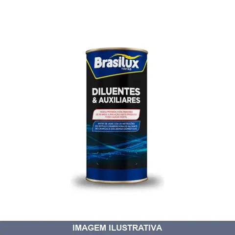
AGUARRAZ LTS BRASILUX
Indicação de Uso: Solvente para diluição de tintas, vernizes e esmaltes. Limpeza de pincéis e ferramentas após pintura. Vantagem Prática: Facilita a aplicação de produtos de pintura e a remoção de resíduos em superfícies e utensílios.
ALFABETO COM NOLL
Jogo com 27 peças de alfabeto em chapa vazada de aço galvanizado, altura das letras 50mm. Inclui sequência alfabética do A ao Z mais o símbolo &. Utilizado como gabarito para aplicações de pintura. Espessura aproximada de 1mm.
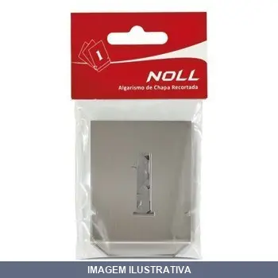
ALGARISMO COM NOLL
Indicação de Uso: Gabarito para pinturas, gravações e letreiros. Composição: Jogo com 10 peças (algarismos de 0 a 9). Material e Resistência: Chapa metálica em aço galvanizado, espessura aproximadamente 1 mm. Vantagem Prática: Fácil de aplicar com tinta em pincel, rolo ou spray; proporciona marcações nítidas e uniformes.

BANDEJA PARA PINTURA FLEX ROMA
Bandeja plástica em polipropileno para pintura, compatível com rolos de 23cm. Indicada para carregar e escurrir tinta durante o processo de pintura. Apropriada para todos os tipos de tinta. Fácil de limpar e reutilizável.
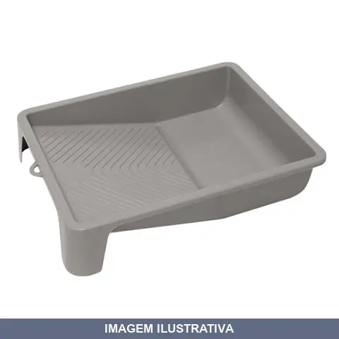
BANDEJA PARA PINTURA ROMA
BANDEJA PLAST RECICLADA 15CM Bandeja plástica para tinta, em polipropileno. Para rolos 15 e 23cm
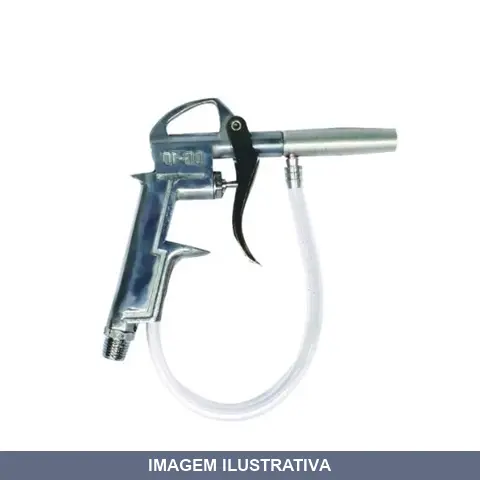
BICO AR PULVERIZADOR ALUMINIO COM MANGUEIRA DGP10 RF
DGP10 - PULVERIZADOR TIPO PISTOLA ROSCA MACHO 1/4'' NPT
BICO AR PULVERIZADOR ALUMINIO COM MANGUEIRA LOTUS
Indicação de Uso: Pulverização de líquidos em aplicações de pintura, limpeza e tratamento. Material e Resistência: Construído em alumínio com mangueira integrada tipo Lotus, oferecendo durabilidade e resistência ao uso contínuo. Vantagem Prática: Permite aplicação uniforme e controlada de produtos líquidos com facilidade de manuseio e mobilidade.
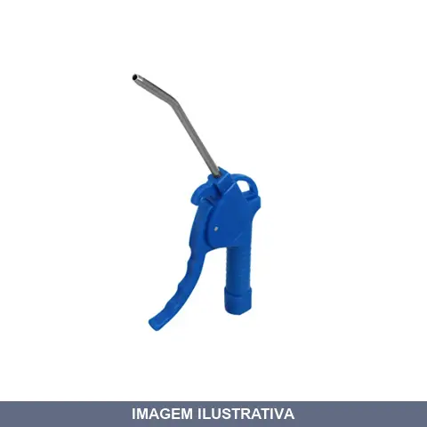
BICO AR PULVERIZADOR COM TUBO PLASTICO PVMP WIMPEL
Indicação de Uso: Pulverização com acionamento por gatilho para limpeza geral. Material e Resistência: Corpo em alumínio com tubo plástico, regulagem de pulverização. Vantagem Prática: Pressão de trabalho de 50 libras com compressor sugerido de 10 pés.
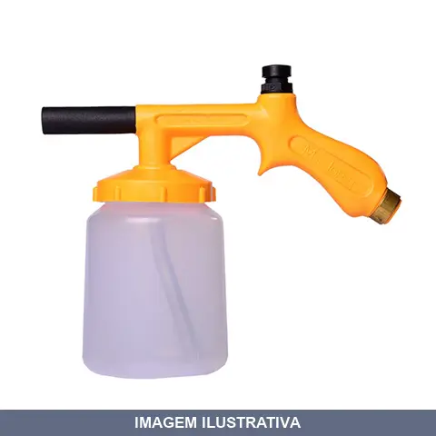
BICO AR PULVERIZADOR PLASTICO COM CANECO P01CL MAC LOREN
BICO DE AR MACLOREN PUL. COM CANECA (P01-CL) Pulverizador de Ar Comprimido Bico Longo com Caneca Fabricado em material de alta qualidade o produto possui anel de latão acoplado na rosca que liga o produto ao compressor de ar proporcionando maior resistência e durabilidade. Trabalha com pressão de até 180 psi ou 12,7 kg/cm². Entrada de ar: ¼” NPT.
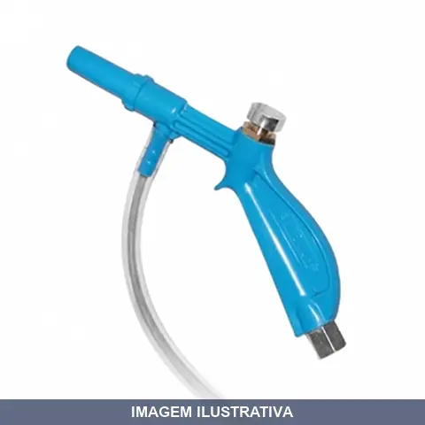
BICO AR PULVERIZADOR PLASTICO COM MANGUEIRA MS -BL STEULA
PULVERIZADOR PLASTICO COM BICO LONGO MS 3-BL - Ideal para lava-rápidos e postos de serviço, sendo resistente à ação do Solupan, limpa-baú e outros produtos alcalinos. - Corpo plástico, válvula e conexão traseira metálicas. - Comprimento da mangueira = 22 cm. - Rosca de entrada de ar = 1/4 BSP. - O bico longo proporciona sucção 70 % maior do que o modelo MS 3-BC.
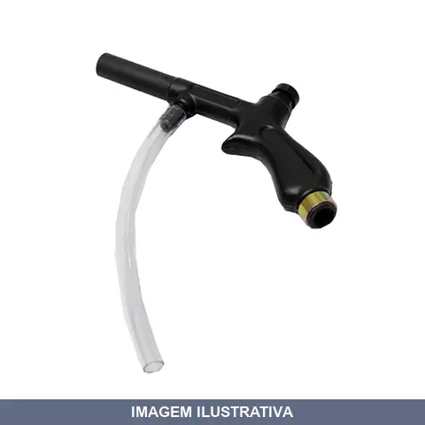
BICO AR PULVERIZADOR PLASTICO COM MANGUEIRA P MAC LOREN
BICO DE AR MACLOREN P/ PULVERIZ P01L Fabricado em material de alta qualidade o produto possui anel de latão acoplado na rosca que liga o produto ao compressor de ar proporcionando maior resistência e durabilidade. Trabalha com pressão de até 180 psi ou 12,7 kg/cm². Entrada de ar: ¼” NPT.
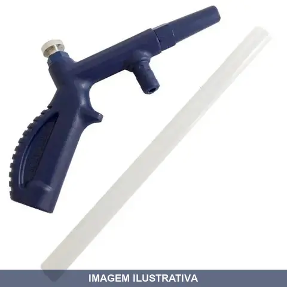
BICO AR PULVERIZADOR PLASTICO COM MANGUEIRA PB02 RF
Indicação de Uso: Pulverização de produtos químicos corrosivos, água, querosene, desinfetantes, vernizes e lubrificantes em aplicações de limpeza, lava rápidos, oficinas e agricultura. Material e Resistência: Corpo em nylon, bico longo. Vedações em borracha nitrílica. Pressão máxima 150 libras. Intervalo de temperatura -15 a 70°C. Vantagem Prática: Acionamento por botão com mangueira de sucção integrada. Rosca fêmea 1/4" NPT para conexão pneumática.
BROXA REDONDA ROMA
Broxa redonda com cerdas em monofilamento PET bicolor. Estrutura composta por cepas e cabo em polipropileno. Ideal para aplicações de pintura e acabamento em superfícies diversas.

BROXA RETANGULAR ROMA
Broxa retangular indicada para pintura e acabamentos em geral. Cerdas em monofilamento PET com cabo em polipropileno. Estrutura resistente e durável para aplicações diversas.
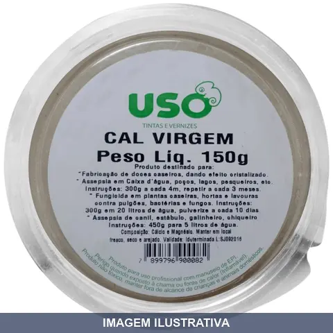
CAL VIRGEM POTE USO
Cal virgem em pó branco obtida da calcinação de rocha calcária. Indicação de Uso: desinfecção de caixas d'água, poços e ambientes; controle de pragas e fungos em plantas; uso em preparações caseiras. Material e Resistência: óxido de cálcio (CaO), reativo com água. Vantagem Prática: produto versátil para limpeza, desinfecção e aplicações agrícolas.
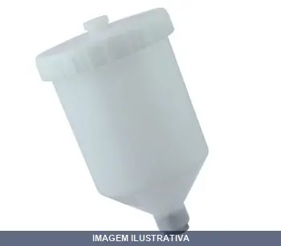
CANECA PARA PISTOLA PLASTICA WIMPEL
Indicação de Uso: Acessório para pistola de pintura, utilizado para armazenar e aplicar tintas, vernizes e solventes. / Material e Resistência: Fabricado em plástico resistente a produtos químicos e solventes. / Vantagem Prática: Compatível com pistolas de pintura pneumática, permite fácil manipulação e limpeza.
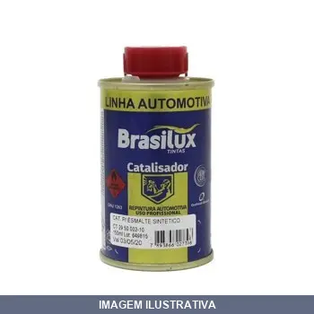
CATALISADOR PARA ESMALTE SINTETICO BRASILUX
Indicado para acelerar a secagem de esmaltes sintéticos e vernizes. Formulado com catalisadores que promovem a polimerização da resina. Proporciona melhor resistência química e mecânica ao acabamento. Proporção recomendada: 1 parte de catalisador para 6 partes de esmalte. Aplicável em superfícies internas e externas.
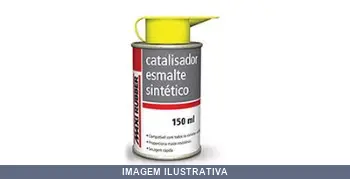
CATALISADOR PARA ESMALTE SINTETICO MAXI RUBBER
Catalisador para esmalte sintético em embalagem de 150ml. Indicado para acelerar a secagem e aumentar a resistência do esmalte sintético. Apresentação incolor. Modo de uso: diluir na proporção de 6 partes de esmalte para 1 parte de catalisador. Tempo de vida útil de 2 horas. Secagem completa em 24 horas (a 25°C).
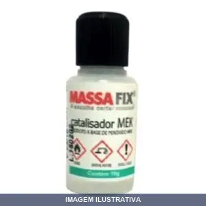
CATALISADOR PARA MASSA PLASTICA MASSAFIX
Catalisador à base de Peróxido de MEK para aceleração do processo de cura de massa plástica. Utilizar 20 gotas para cada 100g de massa, misturando bem antes da aplicação. Indicado para superfícies metálicas, madeira, fibra de vidro e similares. Secagem por camada em aproximadamente 1 hora a 25°C.
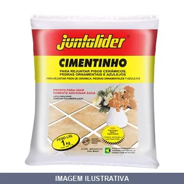
CIMENTINHO BRANCO FORTALEZA
CIMENTINHO BRANCO JUNTALIDER 1KG Indicado para cerâmicas com juntas de 2 a 10mm, em ambientes internos e externos. Cor: Branco Pronto para usar, somente adicionar água. Para rejuntar azulejos, pisos cerâmicos e pedras ornamentais.
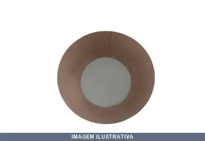
COADOR PARA TINTA FORT
Indicação de Uso: Filtragem de tinta durante aplicação, removendo impurezas e grumos. Material e Resistência: Construído para resistir a contato com tintas e solventes. Vantagem Prática: Garante acabamento uniforme e evita entupimento de equipamentos de pintura.
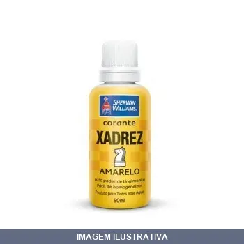
CORANTE BISNAGA AMARELO XADREZ
É um pigmento corante de alto poder de tingimento e resistência, para colorir tintas à base d’água. Cor A cor da tampa apenas indica a tonalidade do produto, que sofrerá alteração quando misturado a tinta. Consultar catálogo de cores para obter sugestões de cores. Embalagem Bisnaga de 50 ml. Rendimento Aproximado Aproximadamente até 1 bisnaga por galão de 3,6 litros de tinta. Aplicação / Diluição Agite o frasco, adicione até 50ml do corante por 3,6L de tinta e misture bem antes e durante a aplic
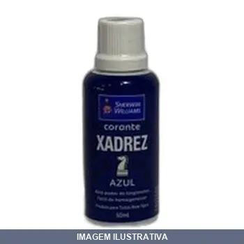
CORANTE BISNAGA AZUL XADREZ
CORANTE XADREZ 50 ML AZUL É um pigmento corante de alto poder de tingimento e resistência, para colorir tintas à base d’água. Cor A cor da tampa apenas indica a tonalidade do produto, que sofrerá alteração quando misturado a tinta. Consultar catálogo de cores para obter sugestões de cores. Embalagem Bisnaga de 50 ml. Rendimento Aproximado Aproximadamente até 1 bisnaga por galão de 3,6 litros de tinta. Aplicação / Diluição Agite o frasco, adicione até 50ml do corante por 3,6L de tinta e misture

CORANTE BISNAGA MARRON XADREZ
CORANTE XADREZ 50 ML MARROM É um pigmento corante de alto poder de tingimento e resistência, para colorir tintas à base d’água. Cor A cor da tampa apenas indica a tonalidade do produto, que sofrerá alteração quando misturado a tinta. Consultar catálogo de cores para obter sugestões de cores. Embalagem Bisnaga de 50 ml. Rendimento Aproximado Aproximadamente até 1 bisnaga por galão de 3,6 litros de tinta. Aplicação / Diluição Agite o frasco, adicione até 50ml do corante por 3,6L de tinta e misture

CORANTE BISNAGA OCRE XADREZ
É um pigmento corante de alto poder de tingimento e resistência, para colorir tintas à base d’água. Cor A cor da tampa apenas indica a tonalidade do produto, que sofrerá alteração quando misturado a tinta. Consultar catálogo de cores para obter sugestões de cores. Embalagem Bisnaga de 50 ml. Rendimento Aproximado Aproximadamente até 1 bisnaga por galão de 3,6 litros de tinta. Aplicação / Diluição Agite o frasco, adicione até 50ml do corante por 3,6L de tinta e misture bem antes e durante a aplic
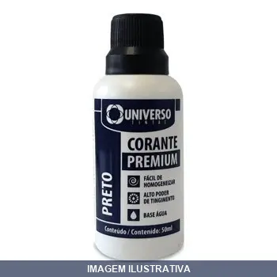
CORANTE BISNAGA PRETO TINTA
CORANTE 50ML PRETO É um pigmento corante de alto poder de tingimento e resistência, para colorir tintas à base d’água. Cor A cor da tampa apenas indica a tonalidade do produto, que sofrerá alteração quando misturado a tinta. Consultar catálogo de cores para obter sugestões de cores. Embalagem Bisnaga de 50 ml. Rendimento Aproximado Aproximadamente até 1 bisnaga por galão de 3,6 litros de tinta. Aplicação / Diluição Agite o frasco, adicione até 50ml do corante por 3,6L de tinta e misture bem ant

CORANTE BISNAGA VERDE XADREZ
CORANTE XADREZ 50ML VERDE É um pigmento corante de alto poder de tingimento e resistência, para colorir tintas à base d’água. Cor A cor da tampa apenas indica a tonalidade do produto, que sofrerá alteração quando misturado a tinta. Consultar catálogo de cores para obter sugestões de cores. Embalagem Bisnaga de 50 ml. Rendimento Aproximado Aproximadamente até 1 bisnaga por galão de 3,6 litros de tinta. Aplicação / Diluição Agite o frasco, adicione até 50ml do corante por 3,6L de tinta e misture b
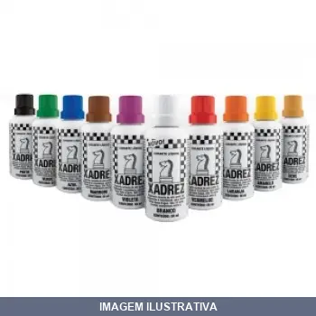
CORANTE BISNAGA VERMELHO XADREZ
É um pigmento corante de alto poder de tingimento e resistência, para colorir tintas à base d’água. Cor A cor da tampa apenas indica a tonalidade do produto, que sofrerá alteração quando misturado a tinta. Consultar catálogo de cores para obter sugestões de cores. Embalagem Bisnaga de 50 ml. Rendimento Aproximado Aproximadamente até 1 bisnaga por galão de 3,6 litros de tinta. Aplicação / Diluição Agite o frasco, adicione até 50ml do corante por 3,6L de tinta e misture bem antes e durante a aplic

CORANTE BISNAGA VIOLETA XADREZ
É um pigmento corante de alto poder de tingimento e resistência, para colorir tintas à base d’água. Cor A cor da tampa apenas indica a tonalidade do produto, que sofrerá alteração quando misturado a tinta. Consultar catálogo de cores para obter sugestões de cores. Embalagem Bisnaga de 50 ml. Rendimento Aproximado Aproximadamente até 1 bisnaga por galão de 3,6 litros de tinta. Aplicação / Diluição Agite o frasco, adicione até 50ml do corante por 3,6L de tinta e misture bem antes e durante a aplic
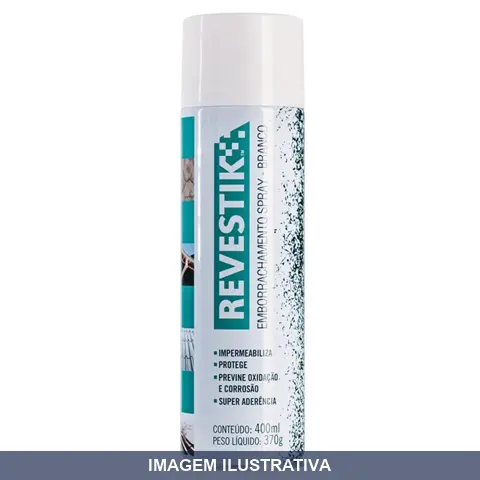
EMBORRACHAMENTO AEROSSOL BRANCO REVESTIK
Emborrachamento em aerossol que forma camada impermeável, elástica e antirruptura, resistente ao sol e ao envelhecimento. Composição: resina, borracha SBR, solventes aromáticos e propelente. Resiste a baixas e altas temperaturas. Indicado para impermeabilização e revestimento de encanamentos, bocais, cantoneiras, rachaduras, áreas frágeis e com vazamentos. Protege contra ferrugem e corrosão. Após secagem, pode ser pintado com tinta à base de óleo ou látex.
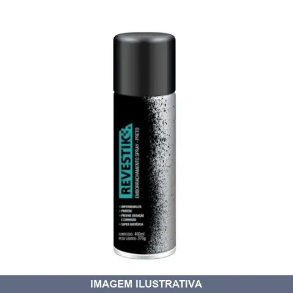
EMBORRACHAMENTO AEROSSOL PRETO REVESTIK
Indicação de Uso: Revestimento protetor em superfícies que necessitam de isolamento e amortecimento. Material e Resistência: Emborrachamento em aerossol, acabamento em borracha preta. Vantagem Prática: Aplicação prática por spray, oferece proteção e aderência em diferentes superfícies.
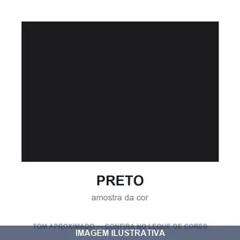
ESMALTE AUTO MOTOR PRETO CHASSI BRASILUX
Indicação de Uso: Metais ferrosos, madeira, chassis e estruturas metálicas em aplicações automotivas e industriais. Material e Resistência: Esmalte sintético com acabamento semi-fosco, resistência comprovada em ambientes industriais. Vantagem Prática: Secagem rápida (20-30 minutos entre camadas) e aderência em superfícies preparadas corretamente.
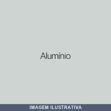
ESMALTE BRILHANTE ALUMINIO BRASILUX
Indicação de Uso: Pintura e acabamento de superfícies metálicas, especialmente alumínio e seus derivados. Ideal para proteção e decoração de peças, estruturas e objetos de metal. Material e Resistência: Esmalte com acabamento brilhante que adere a alumínio, oferecendo camada protetora e visual lustrado. Vantagem Prática: Apresentação em volume reduzido, adequada para pequenos projetos, retoques e aplicações pontuais.

ESMALTE BRILHANTE ALUMINIO PARA RODA BRASILUX
Esmalte sintético formulado à base de resinas alquídicas especiais e pigmentos metálicos de qualidade, isentos de chumbo e metais pesados. Acabamento brilhante em cor alumínio opalescente. Indicado para madeira e superfícies metálicas ferrosas em ambientes internos e externos. Oferece fácil aplicação, ótima aderência, rápida secagem (10-30 minutos ao toque) e resistência às intempéries. Rendimento até 10m²/litro.
ESMALTE BRILHANTE AMARELO OURO COBERTEX
ESMALTE SINTETICO COBERTEX STANDARD BRILHANTE AMARELO OURO 900ML O esmalte é um produto de fácil aplicação, com caracteristicas de alta resistência a intempéries. Possui ótima secagem e excelente acabamento. Características do produto - Rendimento: até 14m²/L por demão - Secagem ao toque: 4Hr Final: 24Hr - Diluição: 15% de Solvraz, mexer até diluição. - Nº de demãos: 2 a 3 com intervalo de 8 horas - Aplicação: Rolo de lã, pincel, trincha ou pistola. Aplicação principal: Indicada para pintura de

ESMALTE BRILHANTE AMARELO OURO NEOLIT NEOVINIL
Indicação de Uso: Pintura de acabamento em superfícies que requerem brilho e cor amarelo ouro. Material e Resistência: Esmalte vinil com acabamento brilhante. Vantagem Prática: Cobertura uniforme com secagem rápida, adequado para interiores e exteriores.

ESMALTE BRILHANTE AZUL DEL REY COBERTEX
O esmalte é um produto de fácil aplicação, com caracteristicas de alta resistência a intempéries. Possui ótima secagem e excelente acabamento. Características do produto - Rendimento: até 14m²/L por demão - Secagem ao toque: 4Hr Final: 24Hr - Diluição: 15% de Solvraz, mexer até diluição. - Nº de demãos: 2 a 3 com intervalo de 8 horas - Aplicação: Rolo de lã, pincel, trincha ou pistola. Aplicação principal: Indicada para pintura de superficies internas e externas de madeiras, metais e galvanizado
ESMALTE BRILHANTE AZUL DEL REY NEOLIT NEOVINIL
Indicação de Uso: Esmalte para pintura de superfícies internas e externas, ideal para acabamento em móveis, portas, janelas e estruturas metálicas. Material e Resistência: Formulação vinil com acabamento brilhante, oferece proteção e durabilidade. Vantagem Prática: Secagem rápida e fácil aplicação com pincel ou rolo.
ESMALTE BRILHANTE AZUL FRANCA COBERTEX
ESMALTE BRILHANTE AZUL FRANÇA 0,900 L COBERTEX O esmalte é um produto de fácil aplicação, com caracteristicas de alta resistência a intempéries. Possui ótima secagem e excelente acabamento. Características do produto - Rendimento: até 14m²/L por demão - Secagem ao toque: 4Hr Final: 24Hr - Diluição: 15% de Solvraz, mexer até diluição. - Nº de demãos: 2 a 3 com intervalo de 8 horas - Aplicação: Rolo de lã, pincel, trincha ou pistola. Aplicação principal: Indicada para pintura de superficies inter

ESMALTE BRILHANTE AZUL FRANCA NEOLIT NEOVINIL
Esmalte para acabamento brilhante em cor azul. Indicado para proteção e pintura de superfícies de madeira, metal e outros substratos. Material à base de resina vinílica com acabamento liso e brilhante. Proporciona cobertura uniforme e secagem rápida para trabalhos de pintura interna e externa.
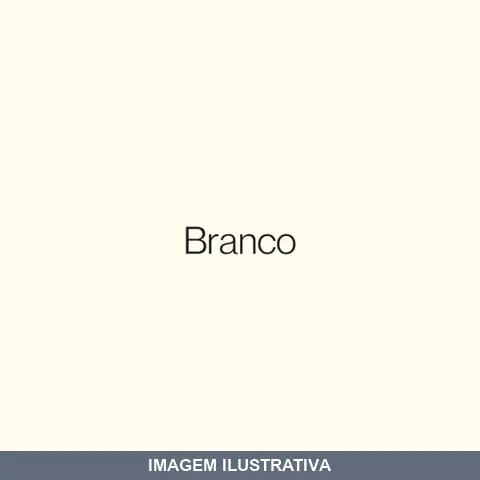
ESMALTE BRILHANTE BRANCO COBERTEX
O esmalte é um produto de fácil aplicação, com caracteristicas de alta resistência a intempéries. Possui ótima secagem e excelente acabamento. Características do produto - Rendimento: até 14m²/L por demão - Secagem ao toque: 4Hr Final: 24Hr - Diluição: 15% de Solvraz, mexer até diluição. - Nº de demãos: 2 a 3 com intervalo de 8 horas - Aplicação: Rolo de lã, pincel, trincha ou pistola. Aplicação principal: Indicada para pintura de superficies internas e externas de madeiras, metais e galvanizado
ESMALTE BRILHANTE BRANCO GELO COBERTEX
O esmalte é um produto de fácil aplicação, com caracteristicas de alta resistência a intempéries. Possui ótima secagem e excelente acabamento. Características do produto - Rendimento: até 14m²/L por demão - Secagem ao toque: 4Hr Final: 24Hr - Diluição: 15% de Solvraz, mexer até diluição. - Nº de demãos: 2 a 3 com intervalo de 8 horas - Aplicação: Rolo de lã, pincel, trincha ou pistola. Aplicação principal: Indicada para pintura de superficies internas e externas de madeiras, metais e galvanizado
ESMALTE BRILHANTE BRANCO NEVE NEOLIT NEOVINIL
Indicação de Uso: Pintura de proteção para madeiras, metais e superfícies externas e internas. Material e Resistência: Esmalte sintético com película resistente a intempéries, óleos e graxas, oferecendo boa cobertura e acabamento uniforme. Vantagem Prática: Secagem rápida para aplicação de segunda demão em menor tempo.
ESMALTE BRILHANTE CINZA ESCURO COBERTEX
ESMALTE BRILHANTE CINZA ESCURO 0,900 L COBERTEX O esmalte é um produto de fácil aplicação, com caracteristicas de alta resistência a intempéries. Possui ótima secagem e excelente acabamento. Características do produto - Rendimento: até 14m²/L por demão - Secagem ao toque: 4Hr Final: 24Hr - Diluição: 15% de Solvraz, mexer até diluição. - Nº de demãos: 2 a 3 com intervalo de 8 horas - Aplicação: Rolo de lã, pincel, trincha ou pistola. Aplicação principal: Indicada para pintura de superficies inter

ESMALTE BRILHANTE CINZA ESCURO NEOLIT NEOVINIL
Indicação de Uso: Pintura de superfícies internas e externas que requerem acabamento com brilho. Indicado para madeira, metal e alvenaria. Material e Resistência: Esmalte sintético com acabamento brilhante. Proporciona proteção e durabilidade à superfície pintada. Vantagem Prática: Secagem rápida e fácil aplicação com pincel ou rolo.

ESMALTE BRILHANTE CINZA MEDIO COBERTEX
O esmalte é um produto de fácil aplicação, com caracteristicas de alta resistência a intempéries. Possui ótima secagem e excelente acabamento. Características do produto - Rendimento: até 14m²/L por demão - Secagem ao toque: 4Hr Final: 24Hr - Diluição: 15% de Solvraz, mexer até diluição. - Nº de demãos: 2 a 3 com intervalo de 8 horas - Aplicação: Rolo de lã, pincel, trincha ou pistola. Aplicação principal: Indicada para pintura de superficies internas e externas de madeiras, metais e galvanizado
ESMALTE BRILHANTE CINZA MEDIO NEOLIT NEOVINIL
Indicação de Uso: Pintura de acabamento brilhante para superfícies internas e externas. Material e Resistência: Esmalte sintético com acabamento brilhante, cor cinza médio. Vantagem Prática: Fornece cobertura uniforme e proteção da superfície com secagem rápida.

ESMALTE BRILHANTE LARANJA COBERTEX
ESMALTE SINTETICO MAXVINIL PREMIUM BRILHANTE LARANJA 900 ML O esmalte é um produto de fácil aplicação, com caracteristicas de alta resistência a intempéries. Possui ótima secagem e excelente acabamento. Características do produto - Rendimento: até 14m²/L por demão - Secagem ao toque: 4Hr Final: 24Hr - Diluição: 15% de Solvraz, mexer até diluição. - Nº de demãos: 2 a 3 com intervalo de 8 horas - Aplicação: Rolo de lã, pincel, trincha ou pistola. Aplicação principal: Indicada para pintura de supe
ESMALTE BRILHANTE LARANJA NEOLIT NEOVINIL
Esmalte brilhante na cor laranja para acabamento e proteção de superfícies. Indicado para aplicação em madeira, metal e outros substratos. Oferece secagem rápida e acabamento liso com brilho. Adequado para uso interno e externo.
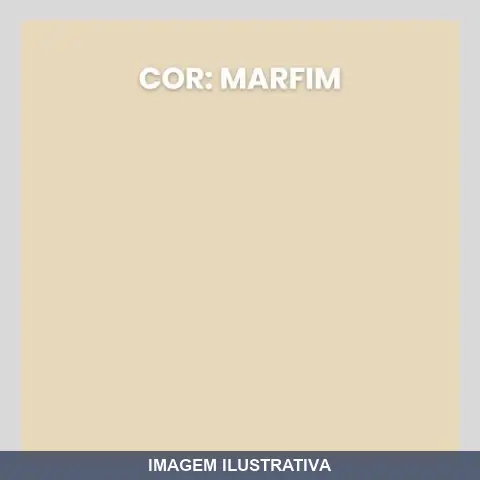
ESMALTE BRILHANTE MARFIN COBERTEX
O esmalte é um produto de fácil aplicação, com caracteristicas de alta resistência a intempéries. Possui ótima secagem e excelente acabamento. Características do produto - Rendimento: até 14m²/L por demão - Secagem ao toque: 4Hr Final: 24Hr - Diluição: 15% de Solvraz, mexer até diluição. - Nº de demãos: 2 a 3 com intervalo de 8 horas - Aplicação: Rolo de lã, pincel, trincha ou pistola. Aplicação principal: Indicada para pintura de superficies internas e externas de madeiras, metais e galvanizado
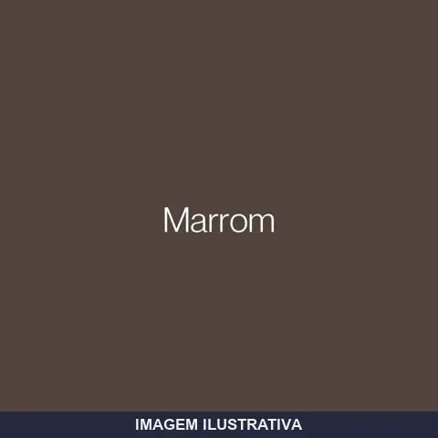
ESMALTE BRILHANTE MARROM COBERTEX
O esmalte é um produto de fácil aplicação, com caracteristicas de alta resistência a intempéries. Possui ótima secagem e excelente acabamento. Características do produto - Rendimento: até 14m²/L por demão - Secagem ao toque: 4Hr Final: 24Hr - Diluição: 15% de Solvraz, mexer até diluição. - Nº de demãos: 2 a 3 com intervalo de 8 horas - Aplicação: Rolo de lã, pincel, trincha ou pistola. Aplicação principal: Indicada para pintura de superficies internas e externas de madeiras, metais e galvanizado
ESMALTE BRILHANTE MARRON CONHAQUE NEOLIT NEOVINIL
Esmalte sintético com acabamento brilhante na cor marrom conhaque. Indicado para proteção e pintura de superfícies de madeira e metal em ambientes internos e externos. Oferece cobertura uniforme e secagem rápida.

ESMALTE BRILHANTE PLATINA COBERTEX
ESMALTE SINTETICO COBERTEX STANDARD BRILHANTE PLATINA 3,6 LITROS O esmalte é um produto de fácil aplicação, com caracteristicas de alta resistência a intempéries. Possui ótima secagem e excelente acabamento. Características do produto - Rendimento: até 14m²/L por demão - Secagem ao toque: 4Hr Final: 24Hr - Diluição: 15% de Solvraz, mexer até diluição. - Nº de demãos: 2 a 3 com intervalo de 8 horas - Aplicação: Rolo de lã, pincel, trincha ou pistola. Aplicação principal: Indicada para pintura de
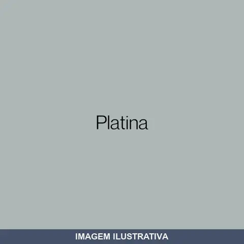
ESMALTE BRILHANTE PLATINA NEOLIT NEOVINIL
Indicação de Uso: Pintura de superfícies que requerem acabamento brilhante e durável. Aplicável em madeira, metal e outros substratos típicos da construção e manutenção. Material e Resistência: Esmalte sintético com pigmentação platina. Proporciona resistência à umidade e desgaste. Vantagem Prática: Acabamento brilhante que realça a cor e facilita a limpeza das superfícies pintadas.

ESMALTE BRILHANTE PRETO COBERTEX
ESMALTE SINTETICO COBERTEX STANDARD BRILHANTE PRETO 900ML O esmalte é um produto de fácil aplicação, com caracteristicas de alta resistência a intempéries. Possui ótima secagem e excelente acabamento. Características do produto - Rendimento: até 14m²/L por demão - Secagem ao toque: 4Hr Final: 24Hr - Diluição: 15% de Solvraz, mexer até diluição. - Nº de demãos: 2 a 3 com intervalo de 8 horas - Aplicação: Rolo de lã, pincel, trincha ou pistola. Aplicação principal: Indicada para pintura de superfi
ESMALTE BRILHANTE PRETO NEOLIT NEOVINIL
Indicação de Uso: Acabamento e proteção de superfícies metálicas e de madeira em ambientes internos e externos. Material e Resistência: Esmalte sintético com acabamento brilhante e pigmentação preta, oferecendo cobertura e durabilidade. Vantagem Prática: Secagem rápida e fácil aplicação com pincel ou rolo.
ESMALTE BRILHANTE VERDE FOLHA COBERTEX
O esmalte é um produto de fácil aplicação, com caracteristicas de alta resistência a intempéries. Possui ótima secagem e excelente acabamento. Características do produto - Rendimento: até 14m²/L por demão - Secagem ao toque: 4Hr Final: 24Hr - Diluição: 15% de Solvraz, mexer até diluição. - Nº de demãos: 2 a 3 com intervalo de 8 horas - Aplicação: Rolo de lã, pincel, trincha ou pistola. Aplicação principal: Indicada para pintura de superficies internas e externas de madeiras, metais e galvanizado

ESMALTE BRILHANTE VERDE FOLHA NEOLIT NEOVINIL
Indicação de Uso: Acabamento e proteção de superfícies em ambientes internos e externos. Material e Resistência: Esmalte sintético com acabamento brilhante, resistente a umidade e intempéries. Vantagem Prática: Secagem rápida e fácil aplicação com pincel ou rolo, conferindo proteção durável e aspecto liso à superfície pintada.
ESMALTE BRILHANTE VERMELHO COBERTEX
ESMALTE SINTETICO COBERTEX STANDARD BRILHANTE VERMELHO 900 ML O esmalte é um produto de fácil aplicação, com caracteristicas de alta resistência a intempéries. Possui ótima secagem e excelente acabamento. Características do produto - Rendimento: até 14m²/L por demão - Secagem ao toque: 4Hr Final: 24Hr - Diluição: 15% de Solvraz, mexer até diluição. - Nº de demãos: 2 a 3 com intervalo de 8 horas - Aplicação: Rolo de lã, pincel, trincha ou pistola. Aplicação principal: Indicada para pintura de sup

ESMALTE BRILHANTE VERMELHO NEOLIT NEOVINIL
Indicação de Uso: Acabamento e pintura de superfícies internas e externas que requerem proteção e cor vermelha. Material e Resistência: Esmalte sintético com acabamento brilhante, proporciona cobertura e durabilidade em madeira, metal e outras superfícies. Vantagem Prática: Secagem rápida e fácil aplicação com pincel ou rolo.

ESMALTE FOSCO PRETO INDUSTRIAL MAXVINIL
ESMALTE SINTETICO MAXVINIL PREMIUM FOSCO PRETO 3,6 LITROS O esmalte é um produto de fácil aplicação, com caracteristicas de alta resistência a intempéries. Possui ótima secagem e excelente acabamento. Características do produto - Rendimento: até 14m²/L por demão - Secagem ao toque: 4Hr Final: 24Hr - Diluição: 15% de Solvraz, mexer até diluição. - Nº de demãos: 2 a 3 com intervalo de 8 horas - Aplicação: Rolo de lã, pincel, trincha ou pistola. Aplicação principal: Indicada para pintura de superfi

ESMALTE FOSCO PRETO MAXVINIL
ESMALTE FOSCO PRETO 0,900ML MAXVINIL O esmalte é um produto de fácil aplicação, com caracteristicas de alta resistência a intempéries. Possui ótima secagem e excelente acabamento. Características do produto - Rendimento: até 14m²/L por demão - Secagem ao toque: 4Hr Final: 24Hr - Diluição: 15% de Solvraz, mexer até diluição. - Nº de demãos: 2 a 3 com intervalo de 8 horas - Aplicação: Rolo de lã, pincel, trincha ou pistola. Aplicação principal: Indicada para pintura de superficies internas e exter
ESMALTE FOSCO PRETO NEOVINIL
Indicação de Uso: Acabamento de superfícies que requerem proteção e aparência fosca, ideal para móveis, portas, janelas e objetos de madeira ou metal. Material e Resistência: Esmalte à base sintética com acabamento fosco preto. Vantagem Prática: Proporciona cobertura uniforme com secagem rápida e fácil aplicação com pincel ou rolo.
ESMALTE INDUSTRIAL AGRILICO BRILHANTE AMARELO OURO
Indicação de Uso: Pintura de superfícies metálicas e industriais que requerem acabamento brilhante e durável. Material e Resistência: Esmalte acrílico com pigmentação amarelo ouro, formulado para aplicação em ambientes internos e externos. Vantagem Prática: Secagem rápida e fácil aplicação com pincel ou rolo.
ESMALTE INDUSTRIAL AGRILICO BRILHANTE VERMELHO MAXVI
Esmalte acrílico industrial de secagem rápida com acabamento brilhante. Indicado para proteção e pintura de superfícies metálicas, madeira e outros substratos em ambientes internos e externos. Proporciona cobertura uniforme com resistência à corrosão e intempéries. Aplicável com pincel, rolo ou pistola.
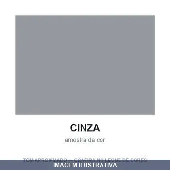
ESMALTE SINTETICO ZARCAO CINZA 18LT MAXVINIL
ZARCÃO ACETINADO CINZA 18L MAXVINIL ANTIGO MAXFER CINZA FUNDO PARA METAIS O fundo proporciona uma película de alta aderência em galvanizados e alumínio. Protege por muito mais tempo a beleza do acabamento final em superfícies internas e externas. Características do produto - Rendimento: até 8m²/L por demão - Secagem ao toque: 15Min Final: 24Hr - Diluição: 10% de Solvraz, mexer até diluição. - Nº de demãos: 2 a 3 com intervalo de 1 horas - Aplicação: Rolo de lã, pincel, trincha ou pistola. Apli

ESMALTE SINTETICO ZARCAO CINZA MEDIO ,6LT NEOVINIL
Indicação de Uso: Pintura de proteção e acabamento em superfícies metálicas, madeira e alvenaria. Ideal para trabalhos de manutenção e reparos em geral. Material e Resistência: Esmalte sintético com pigmentação cinza médio, oferece resistência à corrosão e aos raios ultravioleta. Vantagem Prática: Secagem rápida, fácil aplicação com pincel ou rolo, aderência duradoura em diferentes substratos.
ESMALTE SINTETICO ZARCAO CINZA MEDIO ,900LT NEOVINIL
Indicação de Uso: Esmalte sintético indicado para pintura de proteção e acabamento em superfícies metálicas, especialmente em trabalhos de ferragens e estruturas que requerem camada de zarcão. Material e Resistência: Formulação sintética com pigmentação cinza médio, proporcionando cobertura e aderência em metais. Vantagem Prática: Proporciona secagem adequada para aplicação de camadas subsequentes e proteção contra oxidação em peças metálicas.

ESMALTE SINTETICO ZARCAO LARANJA ,6LT MAXVINIL
ESMALTE SINTETICO MAXVINIL FOSCO ZARCAO UNIVERSAL 3,6 LITROS É um Fundo sintético laranja fosco, inibidor de ferrugem em metais ferrosos. Protege por muito mais tempo a beleza do acabamento final em superfícies internas e externas de metais. Características do produto - Rendimento: até 8m²/L por demão - Secagem ao toque: 4Hr Final: 24Hr - Diluição: 10% de Solvraz, mexer até diluição. - Nº de demãos: 2 a 3 com intervalo de 8 horas - Aplicação: Rolo de lã, pincel, trincha ou pistola. Aplicação pri

ESMALTE SINTETICO ZARCAO LARANJA ,6LT NEOVINIL
Indicação de Uso: Esmalte sintético indicado para proteção e acabamento de superfícies metálicas, especialmente em trabalhos de prevenção à corrosão. Material e Resistência: Formulação sintética com pigmentação em tom laranja (zarcão), oferecendo aderência e durabilidade em aplicações externas e internas. Vantagem Prática: Proporciona cobertura uniforme e secagem adequada para pintura de estruturas metálicas, ferragens e equipamentos.
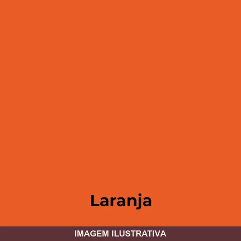
ESMALTE SINTETICO ZARCAO LARANJA ,900LT MAXVINIL
É um Fundo sintético laranja fosco, inibidor de ferrugem em metais ferrosos. Protege por muito mais tempo a beleza do acabamento final em superfícies internas e externas de metais. Características do produto - Rendimento: até 8m²/L por demão - Secagem ao toque: 4Hr Final: 24Hr - Diluição: 10% de Solvraz, mexer até diluição. - Nº de demãos: 2 a 3 com intervalo de 8 horas - Aplicação: Rolo de lã, pincel, trincha ou pistola. Aplicação principal: Indicada para pintura de superfícies internas e exter
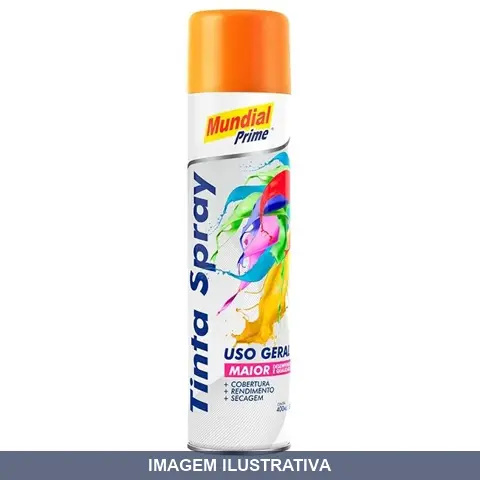
ESMALTE SINTETICO ZARCAO LARANJA SPRAY MUNDIAL
Indicação de Uso: Pintura de proteção anticorrosiva em superfícies metálicas, estruturas de ferro e aço. Material e Resistência: Esmalte sintético com pigmentação em óxido de ferro (zarcão), oferece barreira contra oxidação. Vantagem Prática: Aplicação em spray proporciona cobertura uniforme e secagem rápida.
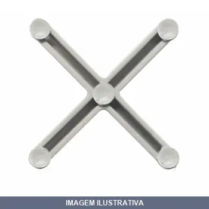
ESPACADOR COM JUNTALIDER 3MM 100
ESPAÇADOR JUNTAPISO 3MM Código: 60510 Aplicação/ Características: Proporciona assentamento alinhado; Reduz o tempo de colocação do revestimento. Funciona como anti-dilatador, evitando o possível deslocamento das peças cerâmicas. Material/ Composição: • Polipropileno Vantagens: • Reduz o tempo de colocação do revestimento; • Funciona como anti-dilatador, evitando o possível deslocamento das peças cerâmicas.
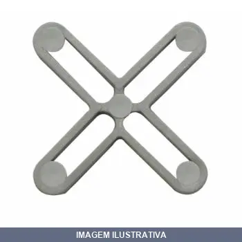
ESPACADOR COM JUNTALIDER 5MM 100
ESPAÇADOR JUNTAPISO 5MM Espaçador Juntapiso 5 mm Código: 60520 Aplicação/ Características: Proporciona assentamento alinhado; Reduz o tempo de colocação do revestimento. Funciona como anti-dilatador, evitando o possível deslocamento das peças cerâmicas. Material/ Composição: • Polipropileno Vantagens: • Reduz o tempo de colocação do revestimento; • Funciona como anti-dilatador, evitando o possível deslocamento das peças cerâmicas.
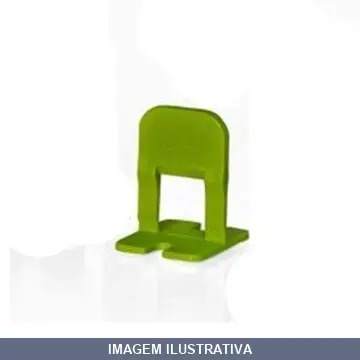
ESPACADOR NIVEL 050PC CRUZETA DEPLASTI
Indicação de Uso: Espaçador para revestimentos em cruzeta, utilizado em assentamento de azulejos, pastilhas e placas cerâmicas para manter uniformidade entre peças. Material e Resistência: Fabricado em plástico. Vantagem Prática: Garante espaçamento consistente entre peças durante a instalação, facilitando alinhamento e acabamento uniforme.

ESPACADOR NIVEL 050PC CRUZETADEPLASTI
Indicação de Uso: Espaçador para aplicações em revestimentos, pisos e acabamentos que exigem precisão de espessura. Material e Resistência: Plástico. Vantagem Prática: Facilita o alinhamento uniforme e o espaçamento consistente durante a instalação.
ESPACADOR NIVEL 100PC CRUZETA GRAFF
Indicação de Uso: Espaçador para aplicação em trabalhos de nivelamento e alinhamento em construção e acabamento. Material e Resistência: Componente tipo cruzeta para uso em ferramentas de nível. Vantagem Prática: Proporciona precisão de espaçamento uniforme de 1.00mm, garantindo alinhamento exato em projetos que exigem tolerância calibrada.
EXTENSOR ROLO ROMA 2.00M
EXTENSOR 2,0 METROS Extensores telescópicos. Fabricados em aço de liga leve, de alta resistência. Com adaptador para diversos suporte
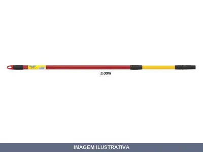
EXTENSOR ROLO ROMA 3.00M
EXTENSOR 3,0 METROS Extensores telescópicos. Fabricados em aço de liga leve, de alta resistência. Com adaptador para diversos suportes. Ref. Tam. - Size Cód. EAN 13 3000 3,00m 7891595001427
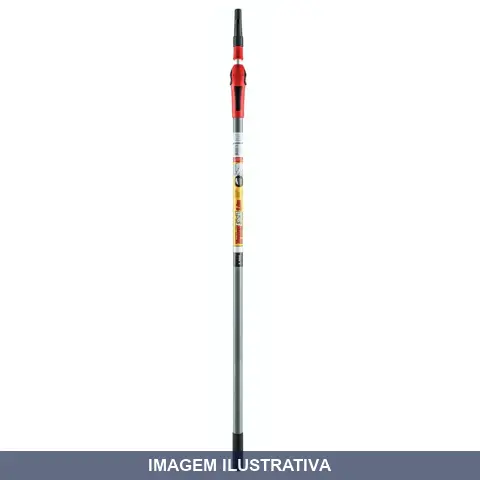
EXTENSOR ROLO ROMA 5.00M
Extensor telescópico para rolo de pintura. Fabricado em aço de liga leve, de alta resistência. Possui adaptador universal compatível com diversos suportes de rolo. Ideal para pinturas em locais de difícil acesso e maior alcance.
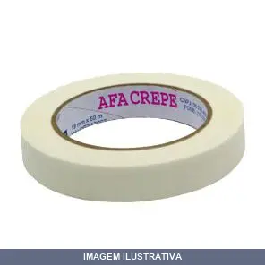
FITA CREPE 18MMX AFA
FITA ADESIVA CREPE COD: 140 18MM X 40 METROS Fita Adesiva AFA Crepe – Uso Geral Cód. 140 Características: Dorso: Papel Crepe 40g/m² tratado à base d’água Adesivo: Base borracha e resinas sintéticas Cor: Palha Claro Validade: Prazo impresso no tubete / arruela Embalagem: Filme encolhível / Caixa de papelão (identificação do lote/corrida impressa na caixa) Identificação do Código de Barras impressa no Pacote e na Caixa Aplicações: Mascaramento/pintura Mobiliária e imobiliária; Trabalhos Escolares,
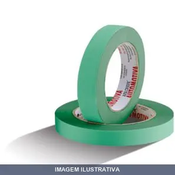
FITA CREPE 18MMX AUTOM VERDE AFA
FITA ADESIVA CREPE VERDE COD: 160 18MM X 40 METROS Fita Adesiva Crepe – Automotiva - Alta Performance - Verde - Cód. 160 Características: Dorso: Papel Crepado Verde 50g/m2 tratado à base d´água Adesivo: Base Borracha e resinas sintéticas Cor: Verde Validade: Prazo impresso no tubete / arruela Embalagem: Filme encolhível / Caixa de papelão (identificação do lote/corrida impressa na caixa). Identificação do Código de Barras impressa no Pacote e na Caixa. Aplicações: Mascaramento em pinturas autom
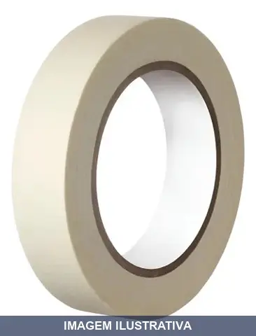
FITA CREPE 18MMX USO GERAL 3M
Indicação de Uso: Fita adesiva indicada para mascaramento, vedação e proteção em trabalhos de pintura, construção e acabamentos diversos. Material e Resistência: Papel crepe com adesivo, apropriada para uso geral em superfícies variadas. Vantagem Prática: Remove-se sem deixar resíduos ou danificar a superfície.

FITA CREPE 24MMX USO GERAL 3M
Indicação de Uso: Fita adesiva de uso geral indicada para vedação, mascaramento e fixação temporária em trabalhos de pintura, construção e manutenção. Material e Resistência: Fita crepe com base em papel, resistente a umidade e com aderência controlada. Vantagem Prática: Remove-se facilmente sem deixar resíduos ou danificar superfícies.
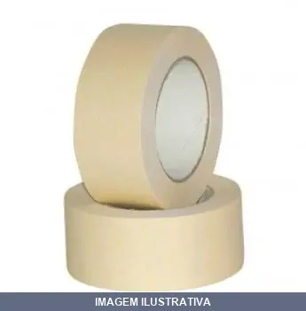
FITA CREPE 45MMX AFA
Indicação de Uso: Ideal para mascaramento em trabalhos de pintura, proteção de áreas durante acabamentos e aplicações que requerem fácil remoção. Material e Resistência: Fita adesiva à base de papel crepe, apropriada para superfícies variadas. Vantagem Prática: Desgruda sem deixar resíduos, permitindo trabalhos precisos e limpeza rápida.
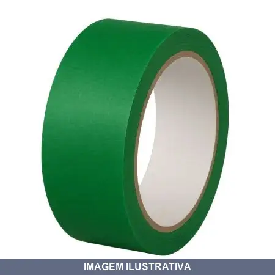
FITA CREPE 48MMX AUTOM VERDE NORTON
Fita adesiva à base de papel crepado. Indicação de Uso: Mascaramento e isolamento de superfícies em pintura automotiva, resistindo a altas temperaturas. Material e Resistência: Papel crepado com adesivo de alta aderência. Vantagem Prática: Facilita o trabalho de proteção de áreas durante processos de pintura, removendo-se sem deixar resíduos.
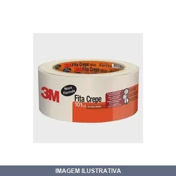
FITA CREPE 48MMX USO GERAL 3M
Indicação de Uso: Fita adesiva de propósito geral para vedação, mascaramento e fixação temporária em superfícies diversas. Material e Resistência: Fita crepe com base em papel, resistente a umidade moderada. Vantagem Prática: Remove-se facilmente sem deixar resíduo adesivo, adequada para trabalhos em pintura, construção e manutenção em geral.
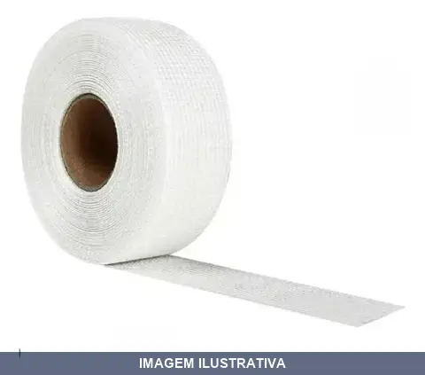
FITA DRYWALL 48MMX BRANCA PLUS LOTUS
Indicação de Uso: Para nivelamento de juntas e emendas entre placas de drywall em paredes e tetos, evitando formação de bolhas, trincas e fissuras. Material e Resistência: Fita telada com fios entrelaçados de fibra de vidro, com face autoadesiva a base d'água. Apresenta alta elasticidade e resistência térmica. Vantagem Prática: Autoadesiva, permite aplicação direta sobre juntas sem necessidade de cola adicional. Compatível com massa para drywall.
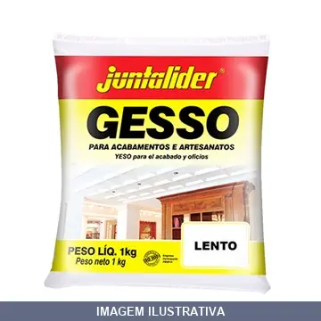
GESSO ESTUQUE LENTO
GESSO LENTO JUNTALIDER 1KG Indicado para artesanato e acabamento. Utilize sempre água potável e recipientes limpos. Para aplicação direta em concreto armado faz-se necessário a utilização de um selante ou chapisco rolado antes da aplicação do gesso. Aplique em superfícies completamente livres de impurezas como graxa, óleos, etc. Evite a aplicação sobre superfície a base de cimento não completamente seca. É necessário revestir a obra externamente antes de revestir internamente com o gesso. E
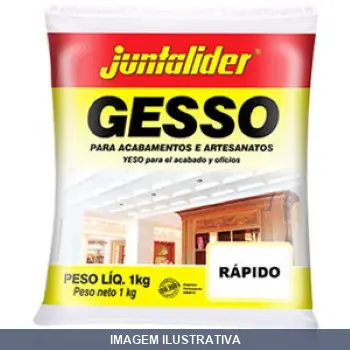
GESSO ESTUQUE RAPIDO
GESSO RAPIDO JUNTALIDER 1KG Indicado para artesanato e acabamento. Utilize sempre água potável e recipientes limpos. Para aplicação direta em concreto armado faz-se necessário a utilização de um selante ou chapisco rolado antes da aplicação do gesso. Aplique em superfícies completamente livres de impurezas como graxa, óleos, etc. Evite a aplicação sobre superfície a base de cimento não completamente seca. É necessário revestir a obra externamente antes de revestir internamente com o gesso.
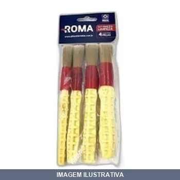
KIT PINCEIS LIMPEZA COM , , , ROMA
Indicação de Uso: Limpeza e detalhamento de painéis, frisos, emblemas, rodas e áreas de difícil acesso em superfícies automotivas. Material e Resistência: Cerdas sintéticas brancas com pontas extra finas, ponta redonda e cabo curto de plástico. Resiste ao desgaste e oferece durabilidade. Vantagem Prática: Facilita a limpeza sem agredir superfícies, com cerdas macias ideais para remoção de poeira e sujeira.

MANTA ASFALTICA 10CMX10MT VIAFLEX
Manta asfáltica autocolante com cobertura de alumínio para vedação e impermeabilização de superfícies. Aplicável em telhas, calhas, rufos e áreas de difícil selagem. Aderência permanente que oferece vedação imediata sem necessidade de ferramentas adicionais.

MANTA ASFALTICA 15CMX10MT VIAFLEX
VIAFLEX FITA 15CM X 10 METROS ( CAIXA COM 8 UNIDADES) Viaflex Fita é uma membrana asfáltica com utilização de asfalto. Com alto teor de elastômeros, propicia permanente adesividade. Recoberta com alumínio flexível, possibilita sua utilização de forma abrangente, de fácil aplicação e proporcionando solução imediata em goteiras e infiltrações. Utilização A alta e permanente adesividade garante a adesão em: - Concreto; - Telhas (metálicas: fibrocimento e concreto); - Rufos e calhas metálicas; - P

MANTA ASFALTICA 20CMX10MT VIAFLEX
VIAFLEX FITA SLEEVE 20CM X 10M (CAIXA COM 4 UNIDADES) Viaflex Fita é uma membrana asfáltica com utilização de asfalto. Com alto teor de elastômeros, propicia permanente adesividade. Recoberta com alumínio flexível, possibilita sua utilização de forma abrangente, de fácil aplicação e proporcionando solução imediata em goteiras e infiltrações. Utilização A alta e permanente adesividade garante a adesão em: - Concreto; - Telhas (metálicas: fibrocimento e concreto); - Rufos e calhas metálicas; - P

MANTA ASFALTICA 30CMX10MT VIAFLEX
VIAFLEX FITA SLEEVE 30 CM X 10 METROS ( CAIXA COM 4 UNIDADES) Viaflex Fita é uma membrana asfáltica com utilização de asfalto. Com alto teor de elastômeros, propicia permanente adesividade. Recoberta com alumínio flexível, possibilita sua utilização de forma abrangente, de fácil aplicação e proporcionando solução imediata em goteiras e infiltrações. Utilização A alta e permanente adesividade garante a adesão em: - Concreto; - Telhas (metálicas: fibrocimento e concreto); - Rufos e calhas metáli
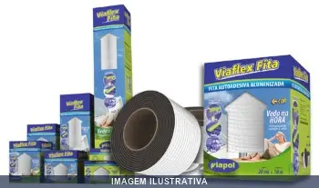
MANTA ASFALTICA 45CMX10MT VIAFLEX
VIAFLEX FITA SLEEVE 45 CM X 10 METROS Viaflex Fita é uma membrana asfáltica com utilização de asfalto. Com alto teor de elastômeros, propicia permanente adesividade. Recoberta com alumínio flexível, possibilita sua utilização de forma abrangente, de fácil aplicação e proporcionando solução imediata em goteiras e infiltrações. Utilização A alta e permanente adesividade garante a adesão em: - Concreto; - Telhas (metálicas: fibrocimento e concreto); - Rufos e calhas metálicas; - Proteção de tubu
MANTA FIBRA CERAMICA ALTA TEMPERATURA 1260C
É usada principalmente para isolamento térmico em aplicações de alta temperatura, como fornos, caldeiras, e tubulações
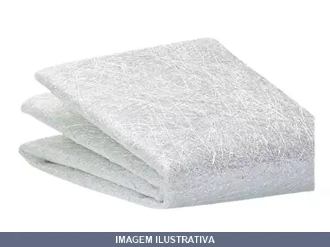
MANTA FIBRA VIDRO CARPLAST
Indicação de Uso: Reforço estrutural para reparação de áreas danificadas em piscinas, banheiras, peças automotivas, náuticas e acessórios modelados em processo aberto. Material e Resistência: Fibras de vidro cortadas aglutinadas por ligante de alta solubilidade em monômero de estireno, proporcionando resistência a impactos e umidade. Oferece também isolamento térmico e acústico. Vantagem Prática: Utilizar em conjunto com Adesivo para Laminação e Veda Choque para resultados estruturais e de

MANTA FIBRA VIDRO MAXI RUBBER
Indicação de Uso: Reforço estrutural para reparação de áreas danificadas. Aplicável com adesivo de laminação, resina poliéster ou epóxi. Indicado para laminação de piscinas, banheiras, peças automotivas, náuticas, objetos em fibra de vidro, metal, madeira, plástico, barcos, telhas e carrocerias. Material e Resistência: Composto por fibras de vidro cortadas, aglutinadas através de ligante de alta solubilidade em monômero de estireno. Vantagem Prática: Fácil aplicação com pincel, menor
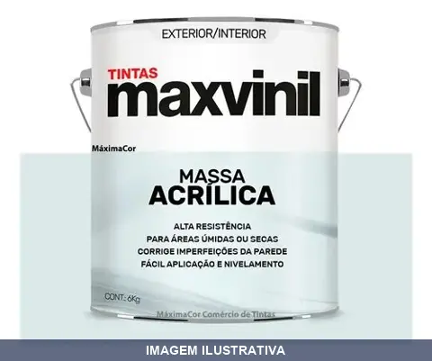
MASSA ACRILICA , LITRO MAXVINIL
NF; 93328 VEIO REF: 000487 MASSA ACRILICA 6KG MAXVINIL É uma massa indicada para corrigir e nivelar imperfeições das superfícies internas e externas, proporcionando um acabamento mais liso e requintado. Características do produto - Rendimento: até 1,5m²/Kg por demão - Secagem ao toque: 30Min Final: 3Hr - Diluição: Pronta para uso. - Nº de demãos: 2 a 3 com intervalo de 1 horas - Aplicação: Desempenadeira ou espátula de aço Aplicação principal: Indicada para paredes internas e externas de reboco,
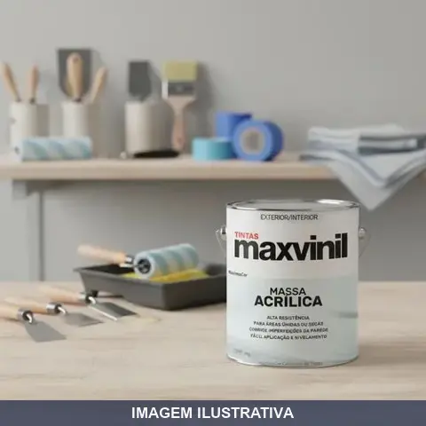
MASSA ACRILICA MAXVINIL 0,900 ML [020803]
Massa acrílica para correção e nivelamento de imperfeições em superfícies internas e externas. Proporciona acabamento liso e uniforme. Pronta para uso, sem necessidade de diluição. Aplicação com desempenadeira ou espátula. Secagem ao toque em 30 minutos e secagem final em 3 horas. Rendimento aproximado de 1,5 m²/kg por demão. Recomenda-se 2 a 3 demãos com intervalo mínimo de 1 hora entre elas.
MASSA ACRILICA MAXVINIL 20.00 KG [022166]
MASSA ACRILICA MAXVINIL CAIXA COM 20 KG É uma massa indicada para corrigir e nivelar imperfeições das superfícies internas e externas, proporcionando um acabamento mais liso e requintado. Características do produto - Rendimento: até 1,5m²/Kg por demão - Secagem ao toque: 30Min Final: 3Hr - Diluição: Pronta para uso. - Nº de demãos: 2 a 3 com intervalo de 1 horas - Aplicação: Desempenadeira ou espátula de aço Aplicação principal: Indicada para paredes internas e externas de reboco, gesso, fibroci
MASSA ACRILICA NEOVINIL
Massa acrílica para acabamento e preenchimento de superfícies. Aplicação em paredes, tetos e alvenaria. Material à base de acrílico, pronto para uso. Ideal para corrigir imperfeições, trincas e preparação de superfícies antes de pintura.
MASSA DE POLIR , GR MAXIRUBBER
Indicação de Uso: Polimento de acabamentos automotivos originais e repinturas com alto grau de calcinação, eliminando riscos de lixamento grão 1200 ou superior. Também aplicável em metais cromados, motocicletas, barcos e eletrodomésticos esmaltados. Material e Resistência: Composição de ácidos graxos, cargas minerais, pigmentos, água e solventes diversos. Massa de consistência leve, isenta de silicones, com poder abrasivo. Vantagem Prática: Restaura aspecto original da pintura, realça cor e
MASSA DE POLIR BASE DAGUA MAXIRUBBER
Massa de polir à base de água, formulada para limpeza e polimento de superfícies. Indicada para uso em trabalhos de acabamento e restauração de brilho em diversos materiais. Apresentação em embalagem de 1 kg.
MASSA PARA MADEIRA GR BRANCA VIAPOL
Massa para madeira branca, de consistência pastosa, própria para calafetar assoalhos, preencher furos, rachaduras e preparar superfícies de madeira. Solúvel em água. Compatível com lacas, tintas látex, poliuretanos, esmaltes sintéticos, ceras e vernizes. Indicação de Uso: Acabamento e preparação de superfícies em madeira. Vantagem Prática: Aderência e compatibilidade com diversos sistemas de acabamento.
MASSA PVA MAXVINIL 01.5 KG [022138]
MASSA CORRIDA PVA MAXVINIL LT 1,5 KG É uma massa indicada para corrigir e nivelar imperfeições das superfícies internas, proporcionando um acabamento mais liso e requintado. Características do produto - Rendimento: até 1,5m²/Kg por demão - Secagem ao toque: 30Min Final: 3Hr - Diluição: Pronta para uso. - Nº de demãos: 2 a 3 com intervalo de 1 horas - Aplicação: Desempenadeira ou espátula de aço Aplicação principal: Indicada para paredes internas de reboco, gesso, fibrocimento, concreto aparent
MASSA PVA MAXVINIL 20.0 KG [021356]
MASSA CORRIDA PVA MAXVINIL CAIXA COM 20 KG É uma massa indicada para corrigir e nivelar imperfeições das superfícies internas, proporcionando um acabamento mais liso e requintado. Características do produto - Rendimento: até 1,5m²/Kg por demão - Secagem ao toque: 30Min Final: 3Hr - Diluição: Pronta para uso. - Nº de demãos: 2 a 3 com intervalo de 1 horas - Aplicação: Desempenadeira ou espátula de aço Aplicação principal: Indicada para paredes internas de reboco, gesso, fibrocimento, concreto apa
MASSA PVA NEOVINIL
Massa à base de PVA para acabamento e preenchimento de superfícies. Indicada para trabalhos de vedação, nivelamento e reparo em aplicações internas. Material plástico versátil, adequado para pintura e acabamentos diversos.
MASSA RAPIDA CINZA CARPLAST
Indicação de Uso: Massa de secagem rápida indicada para preenchimento e acabamento de superfícies. Material e Resistência: Composição à base de aglomerantes, cor cinza. Vantagem Prática: Tempo de secagem reduzido, permitindo lixamento e acabamento em menor prazo.
MASSA RAPIDA CINZA MAXIRUBE
Indicação de Uso: Preenchimento e acabamento de furos, trincas e imperfeições em superfícies de alvenaria, concreto e madeira. Material e Resistência: Massa de secagem rápida em cor cinza. Vantagem Prática: Reduz tempo de espera entre aplicação e lixamento, permitindo pintura em menor prazo.
MISTURADOR DE AÇO SEXTAVADO BRASFORT
Misturador de aço com encaixe sextavado Brasfort. Indicado para misturar tintas, vernizes, argamassas e gessos com auxílio de furadeira. Haste metálica com hélice em aço de alta resistência. Compatível com furadeiras elétricas e manuais com mandril padrão. Encaixe firme e seguro. Uso profissional e doméstico.

MISTURADOR TINTA E ARGAMASSA COM ENCAIXE SDS PLUS LOTUS
Misturador de tinta e argamassa com encaixe SDS plus. Fabricado em aço carbono forjado, temperado e galvanizado. Proporciona velocidade e conforto de operação para misturar cores e tipos de tintas, bater e misturar argamassa com água.
MISTURADOR TINTA GALAO LUBEFER
MISTURADOR TINTA 3,6 LTS ACOPLAMENTO MANDRIL MEXEDOR DE TINTA ME 107 Mexedor de tinta metálico 107 VONDER 35.99.107.000 VONDER Conteúdo da Embalagem: 1 Mexedor de tinta metálico Indicado para misturar tintas em galões de 3,6 L. Utilizado em furadeira elétrica de 3/8" ou superior, com potência superior a 500 W e velocidade variável. Prático, proporciona uma mistura rápida e homogênia Material do mexedor de tinta:Aço carbono Acabamento do mexedor de tinta Metálico:Pintado Cor do mexedor de tinta
MISTURADOR TINTA LATA LUBEFER
MISTURADOR TINTA 18LTS ACOPLAMENTO MANDRIL 3/8 MEXEDOR DE TINTA ME 113 VONDER Indicado para misturar tintas em galões de 18 L. Utilizado em furadeira elétrica de 3/8" ou superior, com potência superior a 500 W e velocidade variável. Prático, proporciona uma mistura rápida e homogênia Material do mexedor de tinta:Aço carbono Acabamento do mexedor de tinta Metálico:Pintado Cor do mexedor de tinta:Preto Diâmetro do mexedor de tinta metálico:120,0 mm Comprimento total do mexedor de tinta:600,0 mm T
PAPEL MASC PINTA BEGE BOBINA MARBRILHO
Papel para mascaramento em bobina. Indicação de Uso: Proteção de áreas não destinadas à pintura contra impregnação de tintas, vernizes e fundos. Material e Resistência: Semi-Kraft, resistente a solventes, impermeável. Vantagem Prática: Não deixa resíduos, não solta fibras, não se rompe ao manusear, ótima conformabilidade.
PAPEL MASC PINTA BEGE RECICLADO BOBINA COMBATPEL
Papel para mascaramento em cor bege, fabricado a partir de material reciclado, apresentado em bobina. Indicado para proteção de áreas não pintadas durante aplicação de tintas, fundos e vernizes. Resistente aos solventes, impermeável, não deixa resíduos e não solta fibras.
PINCEL ROMA
PINCEL 615 PARA ARTESANATO Nº 08 Pincel de cerdas brancas. Ponta plana. Cabo de madeira extraída de floresta renovável - amarelo. Para tinta óleo, artesanato e escola
PISTOLA ALTA PRODUCAO 25A ARPREX
DESATIVADO 16/09/21 - PRODUTO NAO SERA MAIS VENDIDO PISTOLA 25 A Pistola para pintura alta produção, Corpo e Caneca em alumínio. Dados técnicos: - Pressão de trabalho: 40 - 60 lbs/pol² - PSI - Consumo de ar: 5,2 PCM a 50 PSI - Bico: 1,8 mm - Capacidade de caneca: 1000 ml - Compressor indicado: 10,0 PCM ou acima - Peso: 1,300 Kg
PISTOLA ALTA PRODUCAO GRAVIDADE FLEX LOTUS
Pistola para aplicação de tintas e vernizes por gravidade, com capacidade de 350ml. Indicada para trabalhos de pintura em geral, oferecendo fluxo contínuo de material. Material resistente adequado para uso com produtos químicos de pintura.
PISTOLA ALTA PRODUCAO GRAVIDADE MP350 WIMPEL
Indicação de Uso: Pistola para pintura por gravidade, indicada para aplicação de tintas e vernizes em superfícies diversas. Material e Resistência: Construída para uso profissional e industrial. Vantagem Prática: Sistema de gravidade que otimiza o fluxo de tinta, reduzindo desperdício e permitindo maior produtividade em trabalhos de pintura.
PISTOLA ALTA PRODUCAO GRAVIDADE VD250 WIMPEL
Pistola para pintura com sistema de gravidade e alta produção. Indicada para aplicação de tintas e vernizes em superfícies diversas. Conexão com encaixe de 1/4 polegada. Fluxo otimizado para cobertura rápida em trabalhos de pintura industrial e de acabamento.
PISTOLA ALTA PRODUCAO LOTUS
Pistola de ar para pintura de alta pressão. Produzida em alumínio com anel e bico de inox. Possui conexão NPT Americana, consumo de 7 CFM (aproximadamente 200 litros/minuto), vazão até 260ml/minuto e pressão ideal de 50 psi. Indicada para residências, oficinas automotivas, marcenarias e demais aplicações de pintura de alta pressão. Acompanha bico, porca, chave porca e escova extras.
PISTOLA ALTA PRODUCAO MP 410S WIMPEL
CP-10 PISTOLA DE PINTURA SUCCAO 1.8MM TIPO: SUCÇÃO ALTA PRODUÇÃO QUALIDADE PROFISSIONAL ALTA PRODUÇÃO PARA TODAS AS TINTAS AUTOMOTIVAS E INDUSTRIAIS. ACABAMENTO FINO FÁCIL MANUTENÇÃO APLICAÇÃO: AUTOMOTIVA, MOVELEIRA E INDUSTRIAL BICO ORIGINAL: 1,8MM CAPACIDADE DA CANECA: 1 LITRO ENTRADA DE AR: 1/4 NPS ENTRADA DE TINTA: 3/8 NPS CONSUMO DE AR: 10 PCM VAZÃO DE TINTA: 9,8 L/MIN PRESSÃO DE TRABALHO: 30-40 PSI COMPRESSOR SUGERIDO: 2HP Desenvolvida para uso em oficinas de pintura e trabalhos industri
PISTOLA ALTA PRODUCAO MS36 STEULA
PISTOLA PARA PINTURA MS 36-01 ALTA PRODUÇÃO ALTA PRODUÇÃO TIPO: SUCÇÃO STEULA MS36 É UMA PISTOLA INDICADA PARA USO PROFISSIONAL, EM APLICAÇÕES QUE REQUEREM QUALIDADE DE ACABAMENTO, TAIS COMO PINTURA AUTOMOTIVA. TAMBÉM RECOMENDADA PARA USO INDUSTRIAL EM REGIME DE ALTA PRODUÇÃO. A ALIMENTAÇÃO DA TINTA OCORRE POR SUCÇÃO. É UMA PISTOLA QUE SE DESTACA POR SUA LEVEZA E ERGONOMIA. POSSUI REGULAGEM DE VAZÃO DE TINTA E OTIO CONTROLE DA ABERTURA DO LEQUE. PRESSÃO DE TRABALHO: 40 A 50 PSI CONSUMO DE AR: 5,
PISTOLA AR DIRETO ALUMINIO LOTUS
Indicação de Uso: Aplicação de tintas e revestimentos com ar direto em diferentes superfícies de forma uniforme e eficiente. Material e Resistência: Copo em alumínio, entrada de ar 1/4", bico padrão 1,3 mm. Vantagem Prática: Regulagem de leque para ajuste de padrão, consumo de ar de 2 a 6 CFM, pressão de operação 2,0 a 3,5 BAR (36 PSI), vazão de 160 a 260 ml/minuto. Acompanha 2 capas de bico reserva e acessórios.
PISTOLA AR DIRETO ARPREX
PISTOLA DA ARPREX MODELO: 90 AR DIRETO B 1,2MM TIPO: PRESSÃO PRESSÃO DE TRABALHO: MAXIMO 40LBS/POL PSI CONSUMO DE AR: 0,90PCM A 40 PSI CAPACIDADE DA CANECA: 650 ML BICO COD: 10115000 1,2 MM P/ PINTURAS EM GERAL COMPRESSOR INDICADO: AR DIRETO PESO: 0,500KG
PISTOLA AR DIRETO BC70 CANECA PLAST STEULA
PISTOLA PARA PINTURA AR DIRETO -CANECA PLASTICA 650 ML

PISTOLA AR DIRETO MP22 WIMPEL
MP - 22 PISTOLA DE PINTURA AR DIRETO COM CANECA NYLON 1,2MM TIPO: PRESSÃO FLUXO DE AR DIRETO USO GERAL: TINTAS AUTOMOTIVAS, RESIDENCIAIS E VERNIZES. ACABAMENTO FINO FÁCIL MANUTENÇÃO BICO ORIGINAL: 1,2MM CAPACIDADE DA CANECA: 700 ML ENTRADA DE AR: 1/4 NPS CONSUMO DE AR: 0,8 PCM VAZÃO DE TINTA: 0,6 L/MIN PRESSÃO DE TRABALHO: 10-30 PSI COMPRESSOR RECOMENDADO: AR DIRETO APLICAÇÃO: LINHA HOBBY
PISTOLA AR DIRETO WORKER
Indicação de Uso: Pintura em geral em superfícies diversas, uso doméstico e profissional. Material e Resistência: Corpo em nylon injetado com fibra de vidro, bico padrão de 1,5 mm. Vantagem Prática: Sistema de ar direto com capacidade de 700 ml, pressão máxima de 40 psi, consumo de ar de 3,2 a 5,6 PCM, acompanha kit com espalhador, bico e agulha.
PISTOLA AR PARA EMBORRACHAR MP- WIMPEL
Pistola pneumática para aplicação de borracha em superfícies. Funciona com ar comprimido, ideal para trabalhos de impermeabilização, vedação e revestimento em borracha. Ferramenta própria para pintura e acabamento em borracha líquida.
PISTOLA MEDIA PRODUCAO GRAVIDADE MP61 WIMPEL
MP - 2012 PISTOLA DE PINTURA NYLON HVLP 1,4 MM EQUIPAMENTO ECOLOGICO COMPATIVEL COM TINTA A BASE DE AGUA, COM BICO E AGULHA EM AÇO INOX. ANATÔMICA E LEVE AJUSTES PRECISOS COM TRAVAMENTO APÓS REGULAGEM DE FLUXO DE TINTA QUALIDADE PROFISSIONAL ACABAENTO PRECISO CAPACIDADE DE CANECA: 600 ML ENTRADA DE AR: 1/4 NPS ENTRADA DE TINTA: 3/8 NPS CONSUMO DE AR: 5,2 PCM PRESSÃO DE TRABALHO: 20-30 PSI COMPRESSOR SUGERIDO: 5,2 PÉS
PISTOLA MEDIA PRODUCAO MP741 WIMPEL
MP - 741S PISTOLA DE PINTURA 1.5 MM MEDIA PRODUÇÃO SUCÇÃO TIPO SUCÇÃO MEDIA PRODUÇÃO QUALIDADE PROFISSIONAL ACABAMENTO DE ALTA QUALIDADE BICOS E AGULHAS EM AÇO INOXIDAVEL DESENHO ERGONOMICO FACIL MANUTENÇÃO APLICAÇÃO: AUTOMOTIVA E MOVELEIRA BICO ORIGINAL: 1,5 MM CAPACIDADE DA CANECA: 600 ML ENTRADA DE AR: 1/4'' ENTRADA DE TINTA: 3/8'' NPT CONSUMO DE AR: 2,5 PCM VAZÃO DE TINTA: 7,1 L/MIN PRESSÃO DE TRABALHO: 25-35 COMPRESSOR SUGERIDO: 5,2 PÉS MP-741 Equipamento com design moderno e ergonômico, de
PLASTICO BOLHA PARA EMB ,60MX10M [022072]
Bobina de plástico bolha transparente para proteção de produtos frágeis durante transporte e armazenamento. Produzido em filme de polietileno de baixa densidade com bolhas de ar prensadas. Oferece amortecimento contra impactos, choques e vibrações. Leve e flexível, facilita o manuseio. Transparente, permite visualização do produto embalado. Aplicações: embalagem de eletrônicos, cerâmica e objetos frágeis; proteção em mudanças e transporte; e-commerce e armazenagem.
PRIMER UNIVERSAL .600LT MAX RUBBER
Indicação de Uso: Primer universal para preparação de superfícies antes de aplicação de tintas e vernizes. / Material e Resistência: Resina em solução inflamável, classificada como ONU 1866 Classe 3. / Vantagem Prática: Promove melhor aderência e acabamento superior em diversos substratos.
QUEROZENE ANJO
Indicação de Uso: Combustível para lampiões, aquecedores e outros equipamentos que utilizam querosene como fonte de energia térmica ou luminosa. Material e Resistência: Produto inflamável, adequado para armazenamento em recipientes próprios. Vantagem Prática: Fornece energia térmica eficiente para iluminação e aquecimento em ambientes diversos.
QUEROZENE FARBEN
Indicação de Uso: Solvente para diluição de tintas, vernizes e produtos químicos; limpeza de equipamentos e ferramentas de pintura; desengraxante industrial. Material e Resistência: Querosene refinado, produto inflamável. Vantagem Prática: Dissolve resíduos de tinta e graxa, facilitando limpeza de pincéis, rolos e superfícies.

QUEROZENE LITRO EUCATEX
Querosene em embalagem de 5 litros. Indicação de Uso: limpeza de peças, diluição de tintas e vernizes, aplicações de manutenção industrial e residencial. Material e Resistência: líquido inflamável com propriedades desengordurantes. Vantagem Prática: versátil para múltiplos usos em limpeza e preparação de superfícies.
REMOVEDOR DE CIMENTO CP START
Removedor de cimento ácido para limpeza pós-obra. Remove incrustações de cimento, concreto e calcificações em pedras rústicas e pisos vitrificados. Indicação de Uso: Diluir em água conforme necessidade (limpeza leve 1:10, limpeza pesada conforme necessário). Não misturar com produtos clorados. Vantagem Prática: Eficaz na eliminação de sujidades inorgânicas e resíduos de obra.
REMOVEDOR PASTOSO MAXI RUBBER 1 KG
Indicação de Uso: Remoção de tintas, vernizes e revestimentos em superfícies diversas. Material e Resistência: Composição pastosa que aderência à superfície durante o trabalho. Vantagem Prática: Formato pastoso facilita aplicação localizada e reduz escorrimento, permitindo controle na remoção de camadas de pintura e acabamentos.
REMOVEDOR PASTOSO MAXI RUBBER 500ML
Removedor em pasta para limpeza e remoção de resíduos, adesivos e sujidades em superfícies diversas. Apresentação em embalagem de 500ml. Indicado para uso em trabalhos de limpeza, restauração e preparação de superfícies antes de pintura ou aplicação de novos produtos. Produto de aplicação prática e econômica para profissionais e uso doméstico.
REMOVEDOR SPRAY DE TINTAS CHEMICOLOR
REMOVEDOR DE TINTAS ACRILICA SPRAY CHEMICOLOR 400ML/250GR ONU 1950 AEROSSOIS 2.1 (23)
ROLO ESPUMA PARA TEXTURA ROMA
Indicação de Uso: Aplicação de texturas em paredes e tetos. Material e Resistência: Fabricado em espuma, próprio para trabalhos de pintura e acabamento. Vantagem Prática: Proporciona distribuição uniforme de tinta e texturas decorativas em grandes áreas.
ROLO ESPUMA POLIESTER - ROMA
ROLO ESPUMA POLIESTER COM CABO MEALICO . 05 CM Rolo de espuma poliéster de alta densidade, com excelente absorção de tinta. Uso com todos tipos de tintas.
ROLO ESPUMA POLIESTER TIGRE
Rolo de espuma poliéster com núcleo de plástico. Indicação de Uso: aplicação de tintas látex e acrílica em paredes e superfícies lisas. Material e Resistência: espuma poliéster preta de densidade uniforme. Vantagem Prática: proporciona acabamento uniforme e liso com melhor cobertura de tinta.
ROLO FIBRA - ROMA
Rolo de fibra para pintura da marca Roma. Fabricado com fibras especiais, apresenta capacidade de absorção de tinta e proporciona aplicação uniforme. Fabricado pelo sistema de termofusão, oferecendo resistência. Compatível com todos os tipos de tintas, sendo ideal para diferentes tipos de superfícies conforme a altura da fibra.
ROLO LA - POP ROMA
ROLO LA NATURAL POLIESTER COM CABO 05CM Rolo de lã mista com cabo - Lã natural e poliéster. Altura da fibra: 13mm

ROLO LA - ROMA
Rolo de lã mista com cabo - Lã natural e poliéster. Altura da fibra: 13mm
ROLO LA - SEM RESPINGO ROMA
ROLO DE LA SEM RESPINGO COM CABO 09 CM Rolo de Lã Sem Respingo. Altura da fibra: 9mm. Indicado para superfícies lisas. Ref. Tam. - Size Cód. EAN 13 822 09 9cm - 9mm 7891595001977
ROLO LA ANTIGONE - ROMA
Rolo de lã poliamida fabricado por termofusão, indicado para aplicação em superfícies lisas. Compatível com todos os tipos de tintas. Caracteriza-se pelo rendimento, redução de respingo e fácil limpeza após o uso.
ROLO LA ANTIRRESPINGO TIGRE 09CM 1377
ROLO LA SINTETICA 1377-090 ANTIRRESPINGO ECONOMICO Rolo Antirrespingo Ref. 1377 La Sintetica Ideal: Paredes e Tetos - Superficies: Lisas Uso: Latex e Acrilica Altura de lã: 9mm Tamanho em mm: 150, 090
ROLO LA ANTIRRESPINGO TIGRE 15CM 1377
ROLO LA SINTETICO 1377-150 ANTIRRESPINGO ECONOMICO Rolo Antirrespingo Ref. 1377 La Sintetica Ideal: Paredes e Tetos - Superficies: Lisas Uso: Latex e Acrilica Altura de lã: 9mm Tamanho em mm: 150, 090
ROLO LA ANTIRRESPINGO TIGRE 23CM 1376
ROLO LA SINTETICA 1376-230 ANTIRRESPINGO ECONOMICO Rolo Antirrespingo Ref. 1376 La Sintetica Ideal: Paredes e Tetos - Superficies: Lisas Uso: Latex e Acrilica Altura de lã: 9mm Tamanho em mm: 230
ROLO LA CARNEIRO NATURAL ROMA
Indicação de Uso: Superfícies rugosas. Material e Resistência: Rolo de lã de carneiro natural com poliéster, altura da fibra 25mm. Fabricado pelo processo de termofusão que dispensa uso de cola ou adesivo, proporcionando maior durabilidade e resistência. Vantagem Prática: transferência de tinta para aplicação em diferentes tipos de superfícies.
ROLO LA PARA EPOXI ROMA
Rolo de lã para aplicação de tintas epóxi, resinas e vernizes. Material de alta resistência com fibra de lã de carneiro. Indicado para superfícies lisas e polidas, proporcionando acabamento fino e uniforme em madeira e outros substratos.
ROLO LA PARA EPOXI TIGRE
ROLO LA SINTETICO 1366-090 BENEFÍCIOS Descrição: Rolo de Lã Sintética RESIFÁCIL Tinta: Resina, Epóxi, Esmalte e Óleo Superfícies: Metal e Superfícies Lisas em geral Composição: Lã Sintética Altura da Lã: 6mm
ROLO LA SINTETICA TIGRE 05CM 1366
Indicação de Uso: Pintura em superfícies lisas com resina, epóxi, esmalte e óleo. Indicado também para látex e acrílica. Material e Resistência: Lã sintética de poliéster com resistência para aplicações em metal e superfícies lisas. Tubo em PP com fixação durável. Vantagem Prática: Facilita a utilização e permite alta retenção de tinta com acabamento uniforme.
ROLO LA SINTETICA TIGRE 23CM 1396
ROLO LA SINTETICA 1396-230 Rolo Ref. 1396 La Sintetica Ideal: Paredes Uso: Latex, Acrilica e Tintas econômicas Altura de lã: 22mm Tamanho em mm: 230
ROLO MICROFIBRA RPV VONDER
ROLO MICROFIBRAS 23 CM SEM SUPORTE RPV 2012 VONDER Indicado para tintas e vernizes à base de solventes (óleo, esmalte sintético e epóxi) e também para tintas à base de água (látex e acrílicas). Ideal para superfícies semirrugosas. Conhecido como antirrespingo, rende 3x mais e resiste a todos os tipos de solventes. Dimensões: 23 cm (largura) e 18 mm (altura da lã). ANTIGA DESCRIÇÃO: FLUXO PARA SOLDA LATAO/BRONZE 250G VONDER Indicado para soldagem de peças, como: aço, latão e bronze, exceto alumí
ROLO PARA TEXTURA ROMA
ROLO PARA TEXTURA RELEVO 23CM SEM CABO Rolo para textura em relevo. Para aplicação de massa para textura. Decoração e efeitos especiais.
SELADOR ACRILICO MAXVINIL
SELADOR ACRILICO MAXVINIL BRANCO 3,6 LITROS É utilizado como primeira demão em superfícies não seladas, proporcionando uniformidade na absorção e maior rendimento ao seus produtos de acabamento. Características do produto - Rendimento: até 6m²/L por demão - Secagem ao toque: 2Hr Final: 6Hr - Diluição: 10 a 20% de água, mexer até diluição. - Nº de demãos: Aplicação unica - Aplicação: Rolo de lã, pincel, trincha ou pistola. Aplicação principal: Indicada para paredes internas e externas de reboco,
SELADOR ACRILICO NEOVINIL
Indicação de Uso: Superfícies internas e externas de pisos cimentados, quadras poliesportivos, varandas, calçadas, áreas de lazer, demarcações de garagens e pisos comerciais em concreto rústico. Material e Resistência: Acrílico com aderência aos mais diferentes tipos de superfícies. Vantagem Prática: Fácil aplicação e rápida secagem.
SELADOR PARA PLASTICO MAXRUBBER
SELADORA PARA PLASTICO 0,900 L MAXI RUBBER Indicada para promover a aderência em superfícies plásticas. Modo de Usar Preparação da superfície Deve-se lavar a peça com água e sabão neutro até retirar todas as impurezas, óleos e possíveis silicones. Secar e passar a Solução Desengraxante por toda a superfície. Lixar a peça com uma lixa grão 400, se o substrato for texturizado, e com lixa grana 600, se este for liso. Desengraxar novamente toda a superfície. Homogeneizar o produto antes de sua apli
SELADORA CONCENTRADA N/C ACAB. LIXAVEL BRASILUX
Indicação de Uso: Selador concentrado para acabamento de superfícies lixáveis. Indicado para preparação e vedação de base antes de pintura. Material e Resistência: Formulação concentrada, compatível com lixamento. Vantagem Prática: Apresentação concentrada permite diluição conforme necessidade, reduzindo desperdício.
SELADORA UNIVERSAL SAYERLAC
Seladora universal para madeira à base de nitrocelulose, indicada para móveis de uso interno como armários, camas, cadeiras e portas. Fácil aplicação com secagem rápida, promove boa cobertura dos poros e proporciona acabamento sedoso. Compatível com vernizes nitrocelulose. Não indicada para áreas expostas a água e sol.
SPRAY ALUMINIO ALTA TEMPERATURA AEROFLEX
TINTA SPRAY 400ML MUNDIAL PRIME ALTA TEMPERATURA ALUMINIO
SPRAY ALUMINIO ALTA TEMPERATURA CHEMICOLOR
TINTA CHEMICOLOR 350ML ALTA TEMPERATURA ALUMINIO ONU 1950 AEROSSOIS 2.1 (23)
SPRAY ALUMINIO CHEMICOLOR
TINTA CHEMICOLOR 400ML U.G ALUMINIO ONU 1950 AEROSSOIS 2.1 (23)
SPRAY ALUMINIO METALICO AEROFLEX
Indicação de Uso: Pintura em ambientes internos e externos em superfícies como metal, plástico, madeira e vidro. Indicada para pinturas em geral, artesanatos, decorações e reparos. Material e Resistência: Esmalte sintético com acabado metálico. Densidade 0,920-0,960. Secagem total em 24 horas, tempo entre camadas de 5 a 10 minutos. Vantagem Prática: Proporciona cobertura e rendimento. Aplicar em demãos finas e cruzadas a 20-25cm de distância.
SPRAY ALUMINIO PARA RODAS COLORGIN
Indicação de Uso: Rodas de alumínio e outras peças metálicas de ferro. Material e Resistência: Tinta acrílica em spray com acabamento metálico alumínio e secagem rápida. Vantagem Prática: Oferece proteção contra desgaste, corrosão e intempéries com rendimento aproximado de 1,8 a 2,3 m² por embalagem por demão.
SPRAY AMARELO AEROFLEX
Tinta spray multiuso para uso geral, com cobertura total em metal, madeira, plástico e outras superfícies. Secagem rápida e acabamento uniforme. Aplicação versátil para projetos domésticos e profissionais.
SPRAY AMARELO AGRICOLA CHEMICOLOR
TINTA CHEMICOLOR 400ML U.G AMARELO AGRICOLA ONU 1950 AEROSSOIS 2.1 (23)
SPRAY AZUL BANDEIRA AEROFLEX
Spray aerossol indicado para marcação e identificação em cores vibrantes. Proporciona secagem rápida e cobertura uniforme. Adequado para uso em superfícies diversas em ambientes internos e externos.
SPRAY AZUL CLARO CHEMICOLOR
TINTA CHEMICOLOR 400ML U.G AZUL CLARO ONU 1950 AEROSSOIS 2.1 (23)
SPRAY AZUL ESCURO AEROFLEX
Indicação de Uso: Acabamento e pintura de superfícies diversas. Pintura de peças, estruturas metálicas e componentes que necessitam de cobertura uniforme. Material e Resistência: Tinta em spray com pigmentação azul escuro, aplicada através de sistema aerossol. Vantagem Prática: Aplicação rápida e cobertura uniforme sem necessidade de equipamentos adicionais.
SPRAY AZUL MEDIO AEROFLEX
Indicação de Uso: Acabamento, pintura e retoques em superfícies diversas. Material e Resistência: Tinta em spray com pigmentação azul médio, resistente a exposição e desgaste. Vantagem Prática: Aplicação rápida e uniforme sem necessidade de pincéis ou rolos.
SPRAY BRANCO ALTA TEMPERATURA CHEMICOLOR
TINTA CHEMICOLOR 350ML ALTA TEMPERATURA BRANCO FOSCO ONU 1950 AEROSSOIS 2.1 (23)
SPRAY BRANCO BRILHANTE CHEMICOLOR
TINTA CHEMICOLOR 400ML U.G BRANCO BRILHANTE ONU 1950 AEROSSOIS 2.1 (23)
SPRAY BRANCO BRILHANTE MUNDIAL
Indicação de Uso: Pintura de superfícies diversas em acabamento brilhante, ideal para móveis, objetos decorativos e trabalhos de retoque. Material e Resistência: Tinta em spray com pigmento branco, oferece cobertura uniforme e secagem rápida. Vantagem Prática: Aplicação prática e sem desperdício, adequado para áreas de difícil acesso e acabamento profissional.
SPRAY BRANCO FOSCO CHEMICOLOR
TINTA CHEMICOLOR 400ML U.G BRANCO FOSCO ONU 1950 AEROSSOIS 2.1 (23)
SPRAY BRANCO FOSCO MUNDIAL
Indicação de Uso: Pinturas em geral, artesanatos, decorações, reparos e uso profissional em ambientes internos e externos. Superfícies: metais, madeiras, cerâmicas, tecidos e gessos. Vantagem Prática: Acabamento fosco uniforme, aplicação em demãos finas com intervalo de 5 a 10 minutos entre elas. Secagem total em aproximadamente 24 horas.
SPRAY BRANCO FOSCO USO GERAL TEK BOND
Indicação de Uso: Pintura de uso geral em superfícies diversas. Material e Resistência: Tinta em spray com acabamento fosco branco. Vantagem Prática: Aplicação prática e rápida em pequenos projetos e retoques.
SPRAY CINZA CLARO CHEMICOLOR
TINTA CHEMICOLOR 400ML U.G CINZA CLARO ONU 1950 AEROSSOIS 2.1 (23)
SPRAY CINZA ESCURO CHEMICOLOR
TINTA CHEMICOLOR 400ML U.G CINZA ESCURO ONU 1950 AEROSSOIS 2.1 (23)
SPRAY CINZA MEDIO AEROFLEX
Indicação de Uso: Tinta spray de uso geral para pintura e acabamento em ambientes internos e externos em superfícies diversas como metal, madeira e plástico. Material e Resistência: Embalagem em aerossol com acabamento brilhante, fórmula com resinas e pigmentos que garantem aderência uniforme e cobertura completa. Vantagem Prática: Aplicação precisa com válvula spray, secagem rápida ao toque, intervalo entre demãos de 5 a 10 minutos, secagem total em 24 horas.
SPRAY COBRE METALICO AEROFLEX
Spray para acabamento metalizado em cobre. Indicado para pintura decorativa e proteção de superfícies em madeira, metal e outros materiais. Aplicação por aerossol, oferece cobertura uniforme e secagem rápida. Ideal para restauro, artesanato e acabamentos em geral.
SPRAY CROMADO METALICO TEK BOND
Indicação de Uso: Proporcionar efeitos metálicos em uso geral, aplicável em diversas superfícies como ferro, madeira, cerâmica, plásticos e metais em ambientes internos e externos. Material e Resistência: Tinta acrílica desenvolvida com tecnologia de ponta, apresenta secagem rápida e ótima resistência às intempéries. Fórmula com poder de cobertura e durabilidade. Vantagem Prática: Aplicação simples com bico anatômico exclusivo. Rendimento aproximado de 1,7 a 2,1 m². Acabamento cromado
SPRAY CROMADO METALLIK AEROFLEX
Indicação de Uso: Acabamento e proteção de superfícies metálicas com efeito cromado. Aplicável em peças, objetos decorativos e componentes que necessitam de aspecto metalizado. Material e Resistência: Tinta acrílica em spray com pigmentos metalizados que proporcionam acabamento cromado refletivo. Vantagem Prática: Aplicação prática e uniforme sem necessidade de ferramentas adicionais, secagem rápida e cobertura homogênea.
SPRAY CROMADO METALLIK CHEMICOLOR
TINTA CHEMICOLOR 400ML METALICA CROMADO ONU 1950 AEROSSOIS 2.1 (23)
SPRAY DOURADO CHEMICOLOR
TINTA CHEMICOLOR 400ML U.G DOURADO ONU 1950 AEROSSOIS 2.1 (23)
SPRAY GRAFITE METALICO AEROFLEX
Indicação de Uso: Revestimento protetor e decorativo em metais, plásticos e superfícies diversas. Material e Resistência: Grafite metálico com acabamento brilhante, oferece proteção contra oxidação e corrosão. Vantagem Prática: Aplicação rápida em aerossol, sem necessidade de ferramentas adicionais.
SPRAY LARANJA AEROFLEX
Indicação de Uso: Spray aerossol para selagem, proteção e acabamento de superfícies. Material e Resistência: Formulação à base de borracha sintética com pigmentação laranja, oferece flexibilidade e aderência em diversos materiais. Vantagem Prática: Aplicação rápida e uniforme por pulverização, sem necessidade de ferramentas adicionais.
SPRAY LARANJA LUMINOSO AEROFLEX
Indicação de Uso: Pintura e marcação de superfícies em ambientes internos e externos, demarcação de áreas e objetos. Material e Resistência: Tinta à base de aerossol com pigmentação laranja luminoso, resistente a intempéries. Vantagem Prática: Aplicação rápida e uniforme, ideal para trabalhos de sinalização e identificação.
SPRAY MARROM AEROFLEX
Indicação de Uso: Pintura e acabamento em uso geral para superfícies variadas. Material e Resistência: Tinta spray aerosol com acabamento brilhante, pronta para aplicação. Vantagem Prática: Aplicação rápida e uniforme em diversos substratos.
SPRAY OURO METALICO AEROFLEX
Indicação de Uso: Pinturas em geral, artesanatos, decorações, reparos e uso profissional em ambientes internos e externos. Material e Resistência: Aplicável em metais, madeiras, cerâmicas, tecidos e gessos. Vantagem Prática: Proporção acabamento metálico brilhante com secagem rápida e cobertura uniforme.
SPRAY PINK LUMINOSO AEROFLEX
Spray aeroflex na cor rosa luminoso. Indicado para pintura, marcação e acabamento de superfícies diversas. Apresenta acabamento fluorescente que oferece visibilidade em ambientes com pouca luminosidade. Aplicação prática em trabalhos de sinalização, identificação e personalizações.
SPRAY PRATA METALICA CHEMICOLOR
TINTA CHEMICOLOR 400ML METALICA PRATA ONU 1950 AEROSSOIS 2.1 (23)
SPRAY PRATA METALICO AEROFLEX
Indicação de Uso: Acabamentos em metais, madeiras, cerâmicas, tecidos e gessos. Indicada para pinturas em geral, artesanatos, decorações e reparos. Material e Resistência: Spray com efeito metálico, secagem rápida e cobertura. Resistência comprovada e alta aderência. Vantagem Prática: Fácil aplicação com brilho intenso.
SPRAY PRETO ALTA TEMPERATURA AEROFLEX
TINTA SPRAY 400 ML MUNDIAL PRIME ALTA TEMPERATURA PRETO FOSCO
SPRAY PRETO ALTA TEMPERATURA CHEMICOLOR
TINTA CHEMICOLOR 350ML ALTA TEMPERATURA PRETO FOSCO ONU 1950 AEROSSOIS 2.1 (23)
SPRAY PRETO BRILHANTE CHEMICOLOR
TINTA CHEMICOLOR 400ML U.G PRETO BRILHANTE ONU 1950 AEROSSOIS 2.1 (23)
SPRAY PRETO BRILHANTE MUNDIAL
Tinta spray para uso geral em acabamento preto brilhante. Indicada para pinturas em superfícies de metais, madeiras, cerâmicas, tecidos e gessos. Proporciona cobertura uniforme com secagem rápida. Fácil aplicação em áreas de difícil acesso, oferecendo aderência e acabamento duradouro.
SPRAY PRETO FOSCO ALTA TEMPERATURA TEK BOND
Indicação de Uso: Superfícies metálicas expostas a altas temperaturas, como escapamentos, churrasqueiras, fogões, chaminés e lareiras. Material e Resistência: Tinta desenvolvida com tecnologia de alta temperatura, resiste até 600°C. Acabamento fosco que mantém propriedades intactas em áreas externas. Vantagem Prática: Aplicação uniforme por spray, secagem rápida, rendimento aproximado de 1,0 a 1,3 m² por demão.
SPRAY PRETO FOSCO CHEMICOLOR
TINTA CHEMICOLOR 400ML U.G PRETO FOSTO ONU 1950 AEROSSOIS 2.1 (23)
SPRAY PRETO FOSCO MUNDIAL
Tinta spray uso geral para ambientes internos e externos. Indicada para pinturas em geral, artesanatos, decorações, reparos e uso profissional. Aplicável em metais, madeiras, cerâmicas, tecidos e gessos. Oferece acabamento fosco, cobertura durável, alta aderência e secagem total em aproximadamente 24 horas. Aplicar em demãos finas e cruzadas a 20-25 cm de distância.
SPRAY PRETO FOSCO USO GERAL TEK BOND
Indicação de Uso: Ambientes internos e externos para ferro, aço, madeira, cerâmica, gesso e outras superfícies. Material e Resistência: Tinta acrílica em aerossol com resinas acrílicas de secagem rápida e ótima resistência às intempéries. Vantagem Prática: poder de cobertura, acabamento uniforme e efeito decorativo fosco, com rendimento aproximado de 1,7 a 2,1 m² por embalagem.
SPRAY TINTA EFEITO JATEAMENTO EM VIDRO MUNDIAL
Tinta spray de efeito jateado em vidro. Cria acabamento fosco sofisticado que oferece privacidade sem bloquear a passagem de luz. Adequada para janelas, espelhos, divisórias e elementos decorativos. Aplicação por aerossol com controle preciso de cobertura.
SPRAY VERDE CLARO CHEMICOLOR
TINTA CHEMICOLOR 400ML U.G VERDE CLARO ONU 1950 AEROSSOIS 2.1 (23)
SPRAY VERDE ESCURO AEROFLEX
Indicação de Uso: Pintura e acabamento de superfícies diversas em ambientes internos e externos. Material e Resistência: Tinta acrílica em aerossol com pigmentação verde escuro, resistente a intempéries. Vantagem Prática: Aplicação rápida e uniforme sem necessidade de ferramentas adicionais, secagem acelerada.
SPRAY VERDE ESCURO CHEMICOLOR
TINTA CHEMICOLOR 400ML U.G VERDE ESCURO ONU 1950 AEROSSOIS 2.1 (23)
SPRAY VERDE FLUORESCENTE TEK BOND
Indicação de Uso: Marcação, sinalização e identificação de objetos e superfícies em ambientes internos e externos. Material e Resistência: Tinta em aerossol com pigmento fluorescente verde, resistente à luz. Vantagem Prática: Secagem rápida, fácil aplicação por spray, alta visibilidade com cor fluorescente.
SPRAY VERDE LUMINOSO CHEMICOLOR
TINTA CHEMICOLOR 400ML LUMINOSA VERDE ONU 1950 AEROSSOIS 2.1 (23)
SPRAY VERMELHO AEROFLEX
Indicação de Uso: Revestimento protetor e decorativo em aerossol para superfícies diversas. Aplicável em metal, madeira e plástico. Material e Resistência: Tinta acrílica em spray com pigmentação vermelha. Oferece proteção contra corrosão e intempéries. Vantagem Prática: Aplicação rápida e uniforme. Secagem acelerada permitindo repintura em curto prazo.
SPRAY VERMELHO METALICO AEROFLEX
Indicação de Uso: Pintura e acabamento em aerossol para superfícies diversas, proporcionando cobertura com efeito metalizado vermelho. Material e Resistência: Tinta em formato spray, com pigmentação metalizada que oferece acabamento com brilho e profundidade. Vantagem Prática: Aplicação rápida e uniforme sem necessidade de equipamento adicional, secagem acelerada e cobertura homogênea.
SPRAY VERMELHO USO GERAL TEK BOND
Indicação de Uso: Aplicação geral em diversos materiais e superfícies para fins de marcação, proteção ou identificação. Material e Resistência: Formulação em spray com pigmento vermelho, resistente à exposição. Vantagem Prática: Aplicação rápida e uniforme, ideal para trabalhos de manutenção, construção e identificação em ambientes internos e externos.
SPRAY VERNIZ CHEMICOLOR
TINTA CHEMICOLOR 400ML U.G VERNIZ ONU 1950 AEROSSOIS 2.1 (23)
SPRAY VERNIZ USO GERAL AEROFLEX
Indicação de Uso: Verniz em spray para aplicação em superfícies diversas, indicado para acabamento e proteção geral. Material e Resistência: Formulação em aerossol pronta para uso. Vantagem Prática: Aplicação rápida e uniforme sem necessidade de ferramentas adicionais.
SUPORTE ROLO BUCHA ROMA
Suporte para rolo de pintura com buchas de pressão que proporcionam melhor fixação e estabilidade durante o uso. Punho ergonômico em plástico vermelho que oferece conforto e segurança na aplicação. Indicado para trabalhos de pintura em paredes e superfícies diversas.
SUPORTE ROLO GLOBO ARAME ROMA
SUPORTE PARA ROLO PROLONGADOR GLOBO ARAME 23 CM Suporte para rolo 23cm, Globo. Melhor rotação do rolo. Punho anatômico. Maior durabilidade e mais leve
THINNER ANJO
Indicação de Uso: Diluente para tintas, vernizes e produtos de acabamento em geral. Aplicável em trabalhos de pintura, restauro e manutenção. Material e Resistência: Produto químico líquido formulado para dissolução e redução de viscosidade. Vantagem Prática: Facilita a aplicação uniforme de tintas e vernizes, permitindo melhor espalhamento e acabamento das superfícies.
THINNER FARBEN
ONU 1263 TINTA 3 II THINNER 5000 Thinner 5000: Thinner de uso geral / Sintético. Indicado para limpeza de equipamentos de pintura e diluição de esmaltes sintéticos.
THINNER LITRO FARBEN 05 5000 [021629]
ONU 1263 TINTA 3 II THINNER 5000 Thinner 5000: Thinner de uso geral / Sintético. Indicado para limpeza de equipamentos de pintura e diluição de esmaltes sintéticos.
THINNER LITRO FERBEN 18 5000 [021630]
ONU 1263 TINTA 3 II THINNER 5000 Thinner 5000: Thinner de uso geral / Sintético. Indicado para limpeza de equipamentos de pintura e diluição de esmaltes sintéticos.
THINNER LITRO MAXNORTH 05 2750 [022581]
Indicação de Uso: Diluente para tintas, vernizes e produtos afins em trabalhos de pintura e acabamento. Material e Resistência: Produto químico solvente próprio para redução de viscosidade e aplicação de revestimentos. Vantagem Prática: Facilita a aplicação uniforme de tintas e melhora o acabamento final das superfícies pintadas.
THINNER MAXNORTH
Indicação de Uso: Diluente para tintas e vernizes, utilizado em trabalhos de pintura e acabamento. Material e Resistência: Produto químico líquido formulado para reduzir viscosidade de produtos de pintura. Vantagem Prática: Facilita a aplicação uniforme de tintas e vernizes, melhorando o acabamento em superfícies variadas.
THINNER PU LAZZURIL/ANJO
Indicação de Uso: Diluente para tintas e vernizes poliuretânicos, utilizado para ajustar viscosidade e facilitar aplicação por pincel ou spray. Material e Resistência: Solvente orgânico adequado para produtos à base de poliuretano. Vantagem Prática: Proporciona melhor fluidez da tinta, reduzindo o tempo de secagem e permitindo acabamento uniforme.
TINTA FOSCA BRANCO GELO LITRO COBERTEX
É uma tinta de alto desempenho, de fácil aplicação, baixo respingo, ótima cobertura e resistência às intempéries com excelente alastramento. Sem cheiro em até 3 horas após a aplicação. Composição: ´Tinta Base d’ água Características do produto - Rendimento: até 19m²/L por demão - Secagem ao toque: 2Hr Final: 12Hr - Diluição: 20 a 30% de água, mexer até diluição. - Nº de demãos: 2 a 3 com intervalo de 4 horas - Aplicação: Rolo de lã, pincel, trincha ou pistola. Aplicação principal: Indicada para

TINTA FOSCA BRANCO NEVE LITRO COBERTEX
TINTA ACRILICA FOSCO BRANCO NEVE 18 L COBERTEX Tinta Acrílica Fosca É uma tinta de alto desempenho, de fácil aplicação, baixo respingo, ótima cobertura e resistência às intempéries com excelente alastramento. Sem cheiro em até 3 horas após a aplicação. Composição: ´Tinta Base d’ água Características do produto - Rendimento: até 19m²/L por demão - Secagem ao toque: 2Hr Final: 12Hr - Diluição: 20 a 30% de água, mexer até diluição. - Nº de demãos: 2 a 3 com intervalo de 4 horas - Aplicação: Rolo

TINTA FOSCA BRANCO NEVE LITRO ECO PLASLUX NEOVINIL
Tinta fosca branca com tonalidade neve, formulada à base de neovinil para acabamento opaco. Indicada para pintura de paredes, tetos e superfícies internas. Material resistente à abrasão e lavável. Aplicação direta em superfícies preparadas, com cobertura e secagem uniforme.
![TINTA FOSCA BRANCO NEVE LITRO MAXVINIL 18 [021467]](fotos/021467.webp)
TINTA FOSCA BRANCO NEVE LITRO MAXVINIL 18 [021467]
TINTA ACRIC MAXVINIL PREMIUM FOSCO BRANCO NEVE 18 LITROS É uma tinta de alto desempenho, de fácil aplicação, baixo respingo, ótima cobertura e resistência às intempéries com excelente alastramento. Sem cheiro em até 3 horas após a aplicação. Composição: ´Tinta Base d’ água Características do produto - Rendimento: até 19m²/L por demão - Secagem ao toque: 2Hr Final: 12Hr - Diluição: 20 a 30% de água, mexer até diluição. - Nº de demãos: 2 a 3 com intervalo de 4 horas - Aplicação: Rolo de lã, pince
TINTA FOSCA BRANCO NEVE LITRO PINTAMAX 18 [022091]
Tinta acrílica fosca na tonalidade Branco Neve. Indicação de Uso: acabamento interno e externo em paredes e superfícies diversas. Material e Resistência: base água, resistente às intempéries. Vantagem Prática: fácil aplicação, baixo respingo e excelente cobertura.
TINTA PISO BRANCO LITRO NEOPISO NEOVINIL
Indicação de Uso: Acabamento e proteção de pisos internos e externos. Material e Resistência: Tinta à base de vinil com alta resistência ao tráfego e à abrasão. Vantagem Prática: Cobertura uniforme e durável para pisos, com fácil aplicação e secagem rápida.
TINTA PISO CINZA ESCURO LITRO NEOPISO NEOVINIL
Indicação de Uso: Pintura para pisos internos e externos. Material e Resistência: Tinta acrílica com formulação específica para pisos, cor cinza escuro. Vantagem Prática: Cobertura adequada para grandes áreas, apresentação em volume para aplicações extensas.
TINTA PISO CONCRETO LITRO NEOPISO NEOVINIL
Indicação de Uso: Revestimento e proteção de pisos em concreto, ideal para garagens, áreas de serviço, indústrias e espaços com alto tráfego. Material e Resistência: Formulação em vinil que oferece aderência ao concreto e resistência ao desgaste mecânico. Vantagem Prática: Fácil aplicação direta sobre superfícies de concreto, proporcionando acabamento durável e impermeabilizante.
TRINCHA AMARELA ROMA
Trincha com cerdas naturais selecionadas, montada pelo sistema monobloco. Indicação de Uso: Aplicação de tintas e vernizes em trabalhos de pintura. Material e Resistência: Cerdas resistentes e cabo em plástico. Vantagem Prática: Distribuição uniforme de tinta com facilidade de limpeza.
TRINCHA BRANCA % SINTETICA TIGRE
Trincha de cerdas sintéticas brancas 100%, ideal para aplicação de tintas, vernizes e produtos de acabamento em geral. Material totalmente sintético oferece durabilidade e facilita a limpeza. Adequada para trabalhos de pintura em interiores e exteriores.
TRINCHA LARANJA ECONOMICA TIGRE
Trincha com cabo laranja e cerdas naturais para aplicação de tintas látex e acrílica em paredes e superfícies. Indicada para pintura em geral com excelente acabamento.
TRINCHA LARANJA/BEGE ECONONICA TIGRE
Trincha tamanho G para pintura. Indicação de Uso: aplicação de tintas látex e acrílica em paredes e superfícies internas. Material e Resistência: cerdas naturais na cor bege, com cabo plástico laranja, boa resistência e durabilidade. Vantagem Prática: excelente custo-benefício para trabalhos de pintura geral.
TRINCHA SEDA ROMA
Trincha com cerdas de seda natural, indicada para aplicação de tintas, vernizes e produtos de acabamento em superfícies variadas. Material de cerdas oferece distribuição uniforme do produto e facilita o trabalho de pintura em áreas internas e externas.
TRINCHA VERMELHA ROMA
TRINCHA 302 1/2 POLEGADA Trincha média com cerdas grisalhas selecionadas, montada pelo sistema monobloco. Cabo plástico. Indicada para tintas látex e acrílica. Ref. Tam. - Size Cód. EAN 13 302 001 1/2” 7891595000017
VERNIZ F S INCOLOR MAXVINIL
Recomendado para dar acabamento e proteção a superfícies externas e internas de madeira. É resistente a ação de raios ultra violetas, além de proporcionar maior proteção contra os efeitos da chuva e da maresia. Características do produto - Rendimento: até 14m²/L por demão - Secagem ao toque: 4Hr Final: 24Hr - Diluição: 20% de Solvraz, mexer até diluição. - Nº de demãos: 2 a 3 com intervalo de 12 horas - Aplicação: Rolo de lã, pincel, trincha ou pistola. Aplicação principal: Indicada para pintura
VERNIZ F S MOGNO MAXVINIL
VERNIZ FILTRO SOLAR MAXVINIL MOGNO 900 ML Recomendado para dar acabamento e proteção a superfícies externas e internas de madeira. É resistente a ação de raios ultra violetas, além de proporcionar maior proteção contra os efeitos da chuva e da maresia. Características do produto - Rendimento: até 14m²/L por demão - Secagem ao toque: 4Hr Final: 24Hr - Diluição: 20% de Solvraz, mexer até diluição. - Nº de demãos: 2 a 3 com intervalo de 12 horas - Aplicação: Rolo de lã, pincel, trincha ou pistola.
VIAPOL CIMENTO ASFALTICO BARRA VIAPOL 1.5KG
ASFALTO NBR 9910 TIPO II BL 1,5KG Asfalto modificado é um cimento asfáltico, que no processo de industrialização, adquire propriedades específicas para as exigências de desempenho solicitadas na impermeabilização, tais como: propriedades aglutinantes, flexibilidade e durabilidade. Em temperatura ambiente, possui característica sólida, mas por ser um material termoplástico, sua consistência varia em função da temperatura de aquecimento, podendo ser mais ou menos fluído. Características Técnicas º
VIAPOL CIMENTO ASFALTICO BARRA VIAPOL 15KG
4325 ASF. NBR 9910 TIPO III BL 15KG Asfalto modificado é um cimento asfáltico, que no processo de industrialização, adquire propriedades específicas para as exigências de desempenho solicitadas na impermeabilização, tais como: propriedades aglutinantes, flexibilidade e durabilidade. Em temperatura ambiente, possui característica sólida, mas por ser um material termoplástico, sua consistência varia em função da temperatura de aquecimento, podendo ser mais ou menos fluído. Utilização Torodin 3 mm
VIAPOL CONTRA UMIDADE .6LT
CONTRA UMIDADE GL 3,6L CONCORRENTES= VEDACIT E SIKA 1 Aditivo impermeabilizante mineral que misturado às argamassas, confere impermeabilidade, agindo por hidrofugação dos capilares. Vantagens • Aplicação simples e fácil; • Não altera o tempo da cura da argamassa; • Eficiência permanente. Não perde suas características ao longo do tempo. Utilização Contra Umidade é um impermeabilizante hidrófugo que reage com o cimento, bloqueando os capilares da estrutura, interrompendo assim, o desenvolvimento
VIAPOL VIABIT .6LT
Primer asfáltico a frio para aderência em colagem de membranas. Aplicável em concreto, argamassa, alvenaria, metal, PVC e fibra de vidro. Classificado como líquido inflamável ONU 1999 Classe 3. Indicação de Uso: Imprimação de superfícies antes de aplicação de impermeabilizantes. Material e Resistência: Asfaltos modificados com plastificantes e solventes orgânicos, formando filme resistente. Vantagem Prática: Excelente aderência e preparação de base.